The whole guide on one page¶
1. Your first picture in twenty lines¶
Before any theory, make something. This chapter draws Minar-e-Pakistan at sunset with a kite beside it, as two frames that swing back and forth, in 23 lines of Python. Each step below says what the programmer is thinking, then shows the code that follows from the thought. The only library is Pillow, which Colab and Anaconda already include. The whole script, tiny_minar.py, is these steps joined together; it saves the animation to ../out/tiny_minar.gif, so either make that folder or change the last line.

Figure 1.1. The two frames the script makes, side by side, enlarged eight times. Only the kite moves, two pixels to the right; shown alternately every 0.4 seconds, it seems to sway in the wind.
Watch the result: the animated GIF.

1.1 Choose the subject: one idea¶
Thinking: “Which Lahore landmark can I recognise from a single rule?” Badshahi Masjid needs domes, arches and symmetry; a street in the Walled City needs perspective. Minar-e-Pakistan is almost one idea: a white tower that gets narrower as it rises. Starting with the simplest recognisable shape is how most pixel artists begin; detail is added only once the silhouette reads.
1.2 Step 1: the canvas¶
Thinking: “How small can it be and still read as the Minar? A tower is tall and thin.”
from PIL import Image
W, H = 32, 48
A small canvas forces decisions: at 32 pixels wide there is no room for detail that does not matter.
1.3 Step 2: the palette¶
Thinking: “Sunset over Iqbal Park. How few colours can I use?” Five: two for the sky, one for the tower, one for grass, one for the kite.
SKY_TOP, SKY_LOW, MINAR, GRASS, KITE = (70, 40, 90), (240, 130, 60), (235, 230, 220), (40, 70, 40), (220, 30, 60)
Each colour is three numbers from 0 to 255: how much red, green and blue light. There are two easy places to get colours:
-
From a photo. Open your own photograph of the place in any image editor, or a web colour picker, click the sky, the stone and the grass, and copy the three numbers it shows.
-
From a palette library. Pixel artists share ready-made palettes; the Lospec palette list (lospec.com/palette-list) has thousands, searchable by number of colours. Borrowing a tested palette is normal practice and a good way to learn which colours sit well together.
The physics behind the colours. Why is a sunset sky orange near the horizon and purple above? Sunlight contains every colour. Air molecules scatter short waves (blue) much more than long ones (red): this is Rayleigh scattering, and its strength rises as one over the wavelength to the fourth power, so blue light near 450 nm is scattered about four times as strongly as red light near 650 nm. At midday the light’s path through the air is short, and the scattered blue fills the sky. At sunset the light crosses many times more air to reach you; most of the blue is scattered out of the beam on the way, and what arrives near the horizon is orange and red. Higher up the sky is lit by light that has crossed less air, hence the darker purple. Our two sky colours are that physics, chosen by eye.
1.4 Step 3: the sky as a blend¶
Thinking: “Fade from purple at the top to orange at the horizon. How far down a pixel is decides how much of each.”
t = y / 40
c = tuple(int(a + (b - a) * t) for a, b in zip(SKY_TOP, SKY_LOW))
The number t is 0 at the top row and 1 at the horizon (row 40). For each of red, green and blue, the colour is the top value plus the fraction t of the way to the bottom value. This is linear interpolation, often called lerp, and it is the most reused idea in animation: blending colours, positions and sizes all work this way.
1.5 Step 4: the tower from one rule¶
Thinking: “It is a tower that narrows as it rises. If I give its half-width as a function of height, the shape draws itself.”
half = (y - 4) / 12
if 4 <= y < 40 and abs(x - 15.5) <= half + 0.5:
c = MINAR
if 36 <= y < 40 and abs(x - 15.5) <= 7:
c = MINAR
The tower starts at row 4 and grows by one pixel on each side every twelve rows down. abs(x - 15.5) is the distance of a pixel from the centre line, so the test distance from centre \(\le\) half-width is the tower. The second test adds the wide platform the Minar stands on. Notice the tower comes out in steps, not a smooth slope: at this size, one more pixel of width is the smallest change possible. That staircase is part of the 8-bit look.
1.6 Step 5: the ground¶
Thinking: “Everything below the horizon is grass.”
if y >= 40:
c = GRASS
img.putpixel((x, y), c)
The order of the tests matters: later tests overwrite earlier ones, so the sky is the default, the tower is painted over it, and the ground over both. Painting from back to front like this is called the painter’s algorithm.
1.7 Step 6: the kite as a sprite¶
Thinking: “A kite (patang) is a diamond with a tail. I will list its pixels once and stamp it wherever I want.”
PATANG = ((0, -2), (-1, -1), (0, -1), (1, -1), (-2, 0), (-1, 0), (0, 0), (1, 0), (2, 0), (-1, 1), (0, 1), (1, 1), (0, 2))
for dx, dy in PATANG + ((0, 3), (1, 4), (0, 5)):
img.putpixel((kite_x + dx, 10 + dy), KITE)
A small shape stored as a list of offsets from its centre is a sprite. To draw it elsewhere, change kite_x. A first attempt with only five pixels looked like a cross, not a kite: at this size, a shape needs enough pixels for its silhouette to read, and testing by eye is part of the work.
1.8 Step 7: motion from two frames¶
Thinking: “Something only needs to swing to look alive. Two positions, shown in turn, are enough.”
frames = [frame(24), frame(26)]
frames[0].save("../out/tiny_minar.gif", save_all=True, append_images=frames[1:], duration=400, loop=0)
The function frame(kite_x) draws the whole picture with the kite at a given column; the two frames differ only in that number. The GIF shows each for 400 milliseconds and loops for ever. The physics behind the swing: a kite on a string in a gusty wind sways like a pendulum about its resting point. Two frames are the crudest possible sample of that motion, and the eye fills in the rest. Chapter 5 computes the real motion from the forces.
1.9 Step 8: enlarge without blurring¶
Thinking: “At 32 by 48 it is a postage stamp. Make it bigger, but keep the pixels square.”
return img.resize((W * 8, H * 8), Image.NEAREST)
NEAREST (nearest-neighbour resampling) copies each pixel into an 8 by 8 block. Smooth resampling would average neighbouring pixels and blur the edges, losing the pixel-art look.
1.10 What to try next¶
-
Change
SKY_TOPandSKY_LOWto midday blue and white, and see how the mood changes. -
Change 12 in the tower rule to 8 or 20, and watch the taper.
-
Add a third frame,
frame(25), between the two, and the swing becomes smoother. -
Draw the Walled City’s rooftops along the bottom: rectangles of random heights, one random number per house.
The rest of the guide takes each of these ideas (pixels, palettes, blending, shapes from rules, sprites, frames, physics) and builds them up properly, ending with Badshahi Masjid in a full day-and-night film.
2. Before you start¶
This guide builds a small animated picture of Badshahi Masjid, the great Mughal mosque of Lahore completed in 1673, without drawing anything by hand. Every pixel is computed. You start from a single coloured square and add one idea at a time: lines, filled shapes, a palette, a still picture made of reusable parts, then time, light, and finally physics, with a kite on an elastic string and a flock of pigeons. The same picture is then rebuilt in plain C, the way programs written with graphics.h in Dev-C++ drew, so you see what high-level libraries do for you underneath.
The style is deliberately 8-bit: a 160 by 120 canvas and 16 colours, as on home computers of the 1980s. Small canvases make every idea visible, and the methods are the same ones used in modern games and scientific simulations.
2.1 What you will learn¶
-
Pictures: a picture as a grid of numbers; palettes; Bresenham’s line and the midpoint circle; filling shapes with inside tests; dithering.
-
Procedural modelling: describing architecture with geometry (a Mughal arch as two overlapping discs, an onion dome as a width that varies with height) and building a scene from a list of parts, using symmetry.
-
Animation: frames, the animation loop, everything as a function of time, a day-and-night cycle with a palette swap.
-
Simulation science: forces, Newton’s second law, numerical integration and why one form of Euler’s method explodes while another is stable; springs, drag and gusty wind; flocking from three local rules.
-
Design: drawing the program as a class diagram, a data-flow diagram, an entity–relationship diagram and a free-body diagram.
-
Low level: a framebuffer in C, the old BGI drawing calls, and how OpenGL and game engines relate to them.
2.2 Getting Python and the notebook¶
Open the Notebooks page of this guide and choose Open in Colab to run it in a web browser with nothing to install. On your own computer:
conda create -n pixels python=3.12 numpy matplotlib pillow jupyterlab
conda activate pixels
jupyter lab
Then open the downloaded pixel_animation.ipynb. Boxes labelled In [n] are code and Out [n] what it printed or drew. Run the cells in order from the top: each section uses functions defined in the ones before. The animated GIFs are written to a data folder beside the notebook.
2.3 Setup¶
This notebook builds an 8-bit animation of Badshahi Masjid, Lahore, from nothing: first single pixels, then lines, shapes and a still picture, then time, motion and physics. Nothing is drawn by hand. Every part of the picture is computed from a few numbers, so it can be changed, repeated and animated.
Libraries: numpy holds the picture as an array of numbers and does arithmetic on all pixels at once; matplotlib shows pictures in the notebook; Pillow saves images and animated GIFs. All three come with Colab and Anaconda.
import math
from dataclasses import dataclass, field
from pathlib import Path
import numpy as np
import matplotlib.pyplot as plt
from PIL import Image
OUT = Path("data")
OUT.mkdir(exist_ok=True)
plt.rcParams.update({"figure.dpi": 110})
print("numpy", np.__version__)
numpy 2.0.1
3. Still pictures¶
A still picture comes first: an animation is only many stills. This chapter goes from one pixel to the whole front of the mosque, and each step adds one idea.
3.1 A picture is a grid of numbers¶
A screen is a grid of small squares called pixels. Our canvas is 160 pixels wide and 120 high, about the size of a 1980s home computer screen. Position is given by a column x (0 at the left) and a row y (0 at the top: on screens y grows downwards, the opposite of a graph in maths).
Old machines did not store a colour for each pixel. They stored a small number, an index into a palette of 16 colours, so a pixel needed half a byte instead of three. We do the same: the canvas holds numbers 0 to 15, and the palette turns each into red, green and blue amounts (0 to 255 each). Changing one palette entry recolours every pixel that uses it at once, a trick we use later for night.
W, H = 160, 120
GROUND = 104
PALETTE = [
(16, 20, 43), (29, 43, 83), (94, 58, 110), (90, 150, 210), # 0 night, 1 deep blue, 2 dusk, 3 day sky
(170, 210, 235), (240, 140, 60), (255, 220, 110), (240, 236, 225), # 4 pale sky, 5 orange, 6 sun, 7 marble
(190, 185, 175), (170, 62, 45), (115, 38, 32), (40, 20, 22), # 8 marble shade, 9 sandstone, 10 its shade, 11 door
(70, 120, 60), (40, 75, 40), (200, 150, 110), (12, 10, 14), # 12 lawn, 13 lawn shade, 14 path, 15 black
]
RGB = np.array(PALETTE, dtype=np.uint8)
def new_canvas(colour=0):
return np.full((H, W), colour, dtype=np.uint8)
def put_pixel(c, x, y, col):
"""Set one pixel, ignoring positions off the canvas (a 'clipped' write)."""
if 0 <= x < W and 0 <= y < H:
c[int(y), int(x)] = col
def show(c, title=None, ax=None):
ax = ax or plt.figure(figsize=(6, 4.5)).gca()
ax.imshow(RGB[c], interpolation="nearest") # RGB[c] looks every index up in the palette at once
ax.set_xticks([]); ax.set_yticks([])
if title:
ax.set_title(title, fontsize=10)
c = new_canvas(3)
for x in range(W):
put_pixel(c, x, 60, 15) # a horizontal row of black pixels at y = 60
for y in range(H):
put_pixel(c, 80, y, 9) # a vertical column of red pixels at x = 80
put_pixel(c, 10, 10, 6)
fig, axes = plt.subplots(1, 2, figsize=(9, 3.6))
show(c, "Canvas, 160 x 120 palette indices", axes[0])
axes[1].imshow(RGB[np.arange(16).reshape(2, 8)], interpolation="nearest")
for i in range(16):
axes[1].text(i % 8, i // 8, str(i), ha="center", va="center", fontsize=9, color="white" if i in (0, 1, 2, 10, 11, 13, 15) else "black")
axes[1].set_xticks([]); axes[1].set_yticks([]); axes[1].set_title("The 16-colour palette", fontsize=10)
plt.tight_layout(); plt.show()
print("canvas shape (rows, columns):", c.shape, " bytes:", c.nbytes, " value at row 60, column 5:", c[60, 5])

canvas shape (rows, columns): (120, 160) bytes: 19200 value at row 60, column 5: 15
The left panel is the canvas: one black row, one red column and a single yellow pixel near the top left, at x = 10, y = 10. The right panel shows the palette with each index printed on its colour. The printout confirms that the whole picture is 19,200 bytes (one byte per pixel; a real 8-bit machine would pack two pixels per byte) and that the pixel at row 60, column 5 holds 15, the index of black. Note that numpy indexes row first: c``[``y, x``].
3.2 Lines and circles from scratch¶
A line from (x0, y0) to (x1, y1) must be drawn as a staircase of whole pixels. The obvious way, computing y = y0 + slope × (x − x0) for each x, leaves gaps when the line is steep and needs fractions. Bresenham's algorithm (1965) uses only whole numbers: it walks one pixel at a time and keeps a running error, how far the true line has drifted from the pixel centre, and steps sideways whenever the error passes half a pixel. This is what line() in the old graphics.h library and every early games machine did.
A circle uses the same idea. The midpoint circle algorithm works out one eighth of the circle and copies each point to the other seven by symmetry: if (x, y) is on a circle about the centre, so are (y, x), (−x, y) and so on.
def line(c, x0, y0, x1, y1, col):
x0, y0, x1, y1 = int(round(x0)), int(round(y0)), int(round(x1)), int(round(y1))
dx, dy = abs(x1 - x0), -abs(y1 - y0)
sx, sy = (1 if x0 < x1 else -1), (1 if y0 < y1 else -1)
err = dx + dy # error term, scaled to stay a whole number
while True:
put_pixel(c, x0, y0, col)
if x0 == x1 and y0 == y1:
return
e2 = 2 * err
if e2 >= dy: # the line has moved far enough to step in x
err += dy; x0 += sx
if e2 <= dx: # and/or in y
err += dx; y0 += sy
def circle(c, cx, cy, r, col):
x, y, err = r, 0, 1 - r
while x >= y:
for px, py in ((x, y), (y, x), (-y, x), (-x, y), (-x, -y), (-y, -x), (y, -x), (x, -y)):
put_pixel(c, cx + px, cy + py, col)
y += 1
if err < 0:
err += 2 * y + 1 # midpoint inside the circle: keep x
else:
x -= 1; err += 2 * (y - x) + 1 # outside: step x inwards
def naive_line(c, x0, y0, x1, y1, col):
for x in range(x0, x1 + 1):
put_pixel(c, x, round(y0 + (y1 - y0) / (x1 - x0) * (x - x0)), col)
c = new_canvas(4)
naive_line(c, 10, 110, 40, 10, 9) # steep: gaps appear
line(c, 50, 110, 80, 10, 15) # Bresenham: unbroken
for i, a in enumerate(np.linspace(0, math.pi / 2, 7)):
line(c, 90, 110, 90 + 60 * math.cos(a), 110 - 60 * math.sin(a), 1 + i % 2 * 8)
for r in (5, 12, 20):
circle(c, 125, 30, r, 15)
show(c, "Naive line (red, gaps) | Bresenham (black) | a fan of lines | circles")
plt.show()
lit = int((c == 9).sum())
print("pixels lit by the naive steep line:", (c[:, :45] == 9).sum(), "for a rise of 100 rows")

pixels lit by the naive steep line: 31 for a rise of 100 rows
The red line on the left was drawn the naive way. It is steep (100 rows for 30 columns), and the loop visits each column once, so it lights only 31 pixels for 100 rows and is full of gaps; the printout confirms the count. Bresenham's black line beside it steps in whichever direction the line moves faster and is unbroken. The fan shows lines at seven angles, all unbroken; the circles at the top right are drawn from one eighth of their outline each.
3.3 Shapes as inside tests¶
Outlines are not enough; a mosque is made of filled shapes. The easiest way to fill a shape is to ask, for every pixel, is this pixel inside? A shape then becomes a mask: an array of True and False the size of the canvas, and filling it is one line, c``[``mask``]`` = colour. numpy computes the test for all 19,200 pixels at once from two arrays holding every pixel's column X and row Y.
-
A rectangle is x0 ≤ x \< x1 and y0 ≤ y \< y1.
-
A disc (filled circle) of radius r is (x − cx)² + (y − cy)² ≤ r².
-
A Mughal pointed arch is the overlap of two discs. Put the centres a distance k·w/2 either side of the arch's middle line, with radius w/2 + k·w/2, so each circle passes through the far springing point (where the arch leaves its vertical sides). With k = 0 both centres coincide and the arch is round; with k = 1 it is the steep 'equilateral' arch. Badshahi Masjid's arches are close to k = 0.5.
-
An onion dome has a width that changes with height. Let u run from 0 at the base to 1 at the tip. The half width is R(1 − u)\^0.7 (1 + 1.2u): the second factor swells the dome outwards, the first pulls it to a point, and the product is widest about a third of the way up. A third factor narrows the very bottom into a neck.
Y, X = np.mgrid[0:H, 0:W] # Y[row, col] = row, X[row, col] = col
def fill(c, mask, col):
c[mask] = col
def rect(x0, y0, x1, y1):
return (X >= x0) & (X < x1) & (Y >= y0) & (Y < y1)
def disc(cx, cy, r):
return (X - cx) ** 2 + (Y - cy) ** 2 <= r * r
def pointed_arch(cx, spring, bottom, w, k=0.5):
off = k * w / 2
r = w / 2 + off
top = disc(cx + off, spring, r) & disc(cx - off, spring, r) & (Y <= spring)
return top | rect(cx - w / 2, spring, cx + w / 2, bottom)
def onion(cx, base, R, h):
u = (base - Y) / h
hw = R * np.clip(1 - u, 0, 1) ** 0.7 * (1 + 1.2 * u) * (0.8 + 0.2 * np.clip(u / 0.15, 0, 1))
return (u >= 0) & (u <= 1) & (np.abs(X - cx + 0.5) <= hw)
c = new_canvas(4)
for i, k in enumerate((0.0, 0.5, 1.0)):
fill(c, pointed_arch(25 + 30 * i, 60, 100, 22, k), 9)
fill(c, onion(130, 90, 16, 50), 7)
fill(c, onion(130, 90, 16, 50) & (X > 135), 8)
show(c, "Arches with k = 0, 0.5, 1 and an onion dome")
plt.show()
u = np.linspace(0, 1, 11)
hw = (1 - u) ** 0.7 * (1 + 1.2 * u) * (0.8 + 0.2 * np.clip(u / 0.15, 0, 1))
print("u :", " ".join(f"{v:4.1f}" for v in u))
print("width/R:", " ".join(f"{v:4.2f}" for v in hw))
print("widest at u =", u[hw.argmax()], "where the dome is", round(hw.max(), 2), "times its base radius")

u : 0.0 0.1 0.2 0.3 0.4 0.5 0.6 0.7 0.8 0.9 1.0
width/R: 0.80 0.97 1.06 1.06 1.04 0.98 0.91 0.79 0.64 0.42 0.00
widest at u = 0.2 where the dome is 1.06 times its base radius
The three red arches share one formula and differ only in k: round, Mughal and steeply pointed. The white dome is shaded on its right, where a second mask (the dome and x > 135) is filled with the shade colour: light comes from the left. The table gives the dome's half width as a multiple of R at eleven heights. It starts at 0.8 (the neck), peaks at 1.1 times R at u = 0.2 and falls to 0 at the tip, which is the onion shape. To change the dome, change the exponent or the 1.2 and run the cell again.
3.4 Dithering and the 8-bit look¶
A sky fades from deep blue overhead to pale at the horizon, but we have only 16 colours. Ordered dithering mixes two colours in a fixed pattern, so that from a distance the eye averages them. Each pixel gets a threshold from a 4 × 4 Bayer matrix, a table of the numbers 0 to 15 arranged so that neighbouring thresholds are far apart. Where the wanted mix (0 = all top colour, 1 = all bottom colour) exceeds the pixel's threshold, the pixel takes the bottom colour. Halfway down, half the pixels in every 4 × 4 block take each colour, in a checkerboard.
BAYER = np.array([[0, 8, 2, 10], [12, 4, 14, 6], [3, 11, 1, 9], [15, 7, 13, 5]]) / 16
def gradient(c, top, bottom, y_end=GROUND):
t = Y / y_end # 0 at the top, 1 at y_end
c[:] = np.where(t > BAYER[Y % 4, X % 4], bottom, top)
c = new_canvas()
gradient(c, 3, 4)
print("Bayer thresholds (x 16):\n", (BAYER * 16).astype(int))
for row in (8, 52, 92): # a band of 4 rows uses all 16 thresholds once
band = c[row:row + 4]
print(f"rows {row}-{row + 3}: share of pale pixels = {(band == 4).mean():.3f} (wanted {(row + 1.5) / GROUND:.3f})")
show(c, "A dithered sky made from two palette colours"); plt.show()
Bayer thresholds (x 16):
[[ 0 8 2 10]
[12 4 14 6]
[ 3 11 1 9]
[15 7 13 5]]
rows 8-11: share of pale pixels = 0.125 (wanted 0.091)
rows 52-55: share of pale pixels = 0.500 (wanted 0.514)
rows 92-95: share of pale pixels = 0.938 (wanted 0.899)

The printout checks the method on bands of four rows, since a band of four rows meets each of the 16 thresholds once. Near the top (rows 8 to 11) 9 % of pixels should be pale and 12.5 % (2 of 16) are; in the middle (rows 52 to 55) half should be and exactly half are; near the horizon (rows 92 to 95) 90 % should be and 94 % (15 of 16) are. A 4 × 4 matrix can only make 17 levels, 0/16 to 16/16, so each band gets one of the levels nearest what was wanted. The picture shows the pattern: no new colour is used, yet the sky looks graded.
3.5 Components: a mosque from parts¶
Badshahi Masjid (1673) has a few kinds of parts, each repeated: minarets (towers with white bands, balconies and a small domed pavilion, a chhatri, on top), domes on round drums, walls of red sandstone with a row of merlons along the top, and pointed arches framed in white marble. We write each kind once as a class: a recipe holding a few numbers (position and size) and a draw method that turns them into pixels. A particular minaret is an object, one use of the recipe.
The building is symmetric about its centre line, so we describe only the left half and mirror each part: x becomes W − x. The whole building is then a list of objects, drawn back to front so that nearer parts cover farther ones (the 'painter's algorithm'). This list is data: you could save it as a table, edit it, or generate it.
@dataclass
class Dome:
cx: float; base: float; R: float; h: float; drum: float = 6
def draw(self, c):
fill(c, rect(self.cx - self.R * 0.8, self.base, self.cx + self.R * 0.8, self.base + self.drum), 9)
m = onion(self.cx, self.base, self.R, self.h)
fill(c, m, 7)
fill(c, m & (X > self.cx + self.R * 0.3), 8)
top = self.base - self.h
line(c, self.cx, top, self.cx, top - 5, 6) # gilded finial: a spire with a ball
fill(c, disc(self.cx, top - 2, 1.2), 6)
@dataclass
class Minaret:
x: float; top: float; w: float = 6; bottom: float = GROUND - 8; balconies: tuple = (0.3, 0.6)
def draw(self, c):
x0, x1 = self.x - self.w / 2, self.x + self.w / 2
fill(c, rect(x0, self.top, x1, self.bottom), 9)
fill(c, rect(x1 - 2, self.top, x1, self.bottom), 10)
for yy in range(int(self.top) + 3, int(self.bottom), 6):
fill(c, rect(x0, yy, x1, yy + 1), 7)
for f in self.balconies:
yy = self.top + f * (self.bottom - self.top)
fill(c, rect(x0 - 1, yy, x1 + 1, yy + 2), 8)
fill(c, rect(x0 - 1, self.top - 1, x1 + 1, self.top + 1), 8)
for px in (x0, x1 - 1):
fill(c, rect(px, self.top - 5, px + 1, self.top - 1), 7)
fill(c, onion(self.x, self.top - 5, self.w / 2 + 0.5, 5), 7)
line(c, self.x, self.top - 11, self.x, self.top - 13, 6)
@dataclass
class Arch:
cx: float; spring: float; bottom: float; w: float; frame: float = 2; k: float = 0.5; inner: int = 11
def draw(self, c):
fill(c, pointed_arch(self.cx, self.spring, self.bottom, self.w + 2 * self.frame, self.k), 7)
fill(c, pointed_arch(self.cx, self.spring, self.bottom, self.w, self.k), self.inner)
@dataclass
class Block:
x0: float; y0: float; x1: float; y1: float
def draw(self, c):
fill(c, rect(self.x0, self.y0, self.x1, self.y1), 9)
fill(c, rect(self.x0, self.y0, self.x1, self.y0 + 1), 7)
for xx in range(int(self.x0), int(self.x1), 3):
fill(c, rect(xx, self.y0 - 2, xx + 2, self.y0), 9)
def mirror(comp):
d = dict(comp.__dict__)
key = "cx" if "cx" in d else "x" if "x" in d else None
if key:
d[key] = W - d[key]
else:
d["x0"], d["x1"] = W - d["x1"], W - d["x0"]
return type(comp)(**d)
def badshahi():
left = [Minaret(14, 24, 7, balconies=(0.25, 0.5, 0.75)), Dome(46, 52, 9, 16), Block(30, 60, 66, GROUND - 8),
Minaret(30, 44, 4, balconies=(0.4,)), Arch(40, 76, GROUND - 8, 6), Arch(54, 76, GROUND - 8, 6)]
centre = [Dome(80, 38, 13, 22), Block(64, 42, 96, GROUND - 8),
Arch(80, 62, GROUND - 8, 20, frame=3), Arch(80, 70, GROUND - 8, 10, frame=1, inner=10)]
comps = []
for comp in left:
comps += [comp, mirror(comp)]
return comps[:4] + centre[:1] + comps[4:] + centre[1:]
def ground(c):
fill(c, rect(0, GROUND - 8, W, GROUND), 14)
fill(c, rect(0, GROUND - 8, W, GROUND - 7), 7)
fill(c, Y >= GROUND, 12)
fill(c, (Y >= GROUND) & ((X - 80) ** 2 * 0.02 < (Y - GROUND + 2)), 14)
scene = badshahi()
for comp in scene[:6]:
print(comp)
print("...", len(scene), "components in all")
fig, axes = plt.subplots(1, 4, figsize=(12, 2.6))
c = new_canvas(); gradient(c, 3, 4); ground(c)
for i, n in enumerate((2, 5, 10, len(scene))):
step = c.copy()
for comp in scene[:n]:
comp.draw(step)
show(step, f"first {n} components", axes[i])
plt.tight_layout(); plt.show()
still = step
Image.fromarray(RGB[still]).resize((W * 4, H * 4), Image.NEAREST).save(OUT / "badshahi_still.png")
Minaret(x=14, top=24, w=7, bottom=96, balconies=(0.25, 0.5, 0.75))
Minaret(x=146, top=24, w=7, bottom=96, balconies=(0.25, 0.5, 0.75))
Dome(cx=46, base=52, R=9, h=16, drum=6)
Dome(cx=114, base=52, R=9, h=16, drum=6)
Dome(cx=80, base=38, R=13, h=22, drum=6)
Block(x0=30, y0=60, x1=66, y1=96)
... 16 components in all

The printout lists the first six objects: each is just a name and a few numbers, and mirrored pairs differ only in their x (14 and 146, 46 and 114). The four panels draw the list in order. After 2 components the two great minarets stand alone; after 5 the side domes and the central dome are up; after 10 the walls cover the bases of the domes, as the painter's algorithm intends; the last panel is the whole front, 16 components from 6 written by hand. The still is saved as data/badshahi_still.png, scaled up four times with nearest-neighbour resampling so the pixels stay sharp squares.
4. Time and motion¶
Motion is a picture that depends on time. Here the time is the hour of the day: the sun crosses the sky, the sky changes colour, and the building takes its night colours after sunset.
Watch the result: a day and a night as an animated GIF.

4.1 Time and frames¶
An animation is a sequence of still pictures, frames, shown quickly; at 20 frames a second the eye sees motion. A program makes them with a loop: for each frame, work out the time t, update everything that moves, draw the scene, and store the picture. Everything that changes is a function of time.
The sun moves on a circle of radius 84 centred below the ground. A day is one turn, phase 0 to 1: the angle is a = 2π × phase, the position is (80 − 84 cos a, 104 − 84 sin a), and sin a is the sun's elevation: positive by day, negative by night. The sky's two colours are chosen from the elevation.
Night uses the palette trick: every colour of the building is swapped for its darker partner (sandstone 9 becomes shade 10, marble 7 becomes grey 8). This is a palette swap, as old games did to make night levels without drawing anything again.
NIGHT = {9: 10, 7: 8, 12: 13, 14: 2, 8: 10, 10: 11}
def sun_position(phase):
a = 2 * math.pi * phase
return 80 - 84 * math.cos(a), GROUND - 84 * math.sin(a), math.sin(a)
def sky(c, elevation):
if elevation > 0.25: top, bottom = 3, 4 # day
elif elevation > 0: top, bottom = 2, 5 # sunrise and sunset glow
elif elevation > -0.2: top, bottom = 0, 2 # twilight
else: top, bottom = 0, 1 # night
gradient(c, top, bottom)
if elevation < 0:
rng = np.random.default_rng(7) # same seed, so the same stars every frame
c[rng.integers(0, 60, 40), rng.integers(0, W, 40)] = 7
def render(phase, extras=()):
c = new_canvas()
sx, sy, elev = sun_position(phase)
sky(c, elev)
if elev > -0.05:
fill(c, disc(sx, sy, 6), 6)
else:
mx, my, _ = sun_position(phase + 0.5) # the moon is opposite the sun
fill(c, disc(mx, my, 4), 7)
ground(c)
before = c.copy()
for comp in badshahi():
comp.draw(c)
if elev < 0:
covered = (c != before) | (Y >= GROUND - 8)
old = c.copy()
for a, b in NIGHT.items():
c[covered & (old == a)] = b
for e in extras:
e(c)
return c
phases = [0.03, 0.15, 0.25, 0.45, 0.6, 0.8]
fig, axes = plt.subplots(2, 3, figsize=(11, 6))
for ax, p in zip(axes.flat, phases):
sx, sy, e = sun_position(p)
show(render(p), f"phase {p:.2f}: sun ({sx:.0f}, {sy:.0f}), elevation {e:+.2f}", ax)
plt.tight_layout(); plt.show()
def save_gif(frames, path, fps=20):
imgs = [Image.fromarray(RGB[f]).resize((W * 4, H * 4), Image.NEAREST) for f in frames]
imgs[0].save(path, save_all=True, append_images=imgs[1:], duration=int(1000 / fps), loop=0)
save_gif([render(-0.05 + 1.1 * f / 120) for f in range(120)], OUT / "day_and_night.gif", fps=15)
print("saved", OUT / "day_and_night.gif")

saved data\day_and_night.gif
Each panel is the same scene at a different phase of the day; only the phase number changed. At phase 0.03 the sun has just risen at the left (elevation +0.19), so the sky has the sunrise glow. At 0.15 and 0.25 it is high and the sky is blue. At 0.45 it is setting on the right. At 0.6 and 0.8 the elevation is negative: the sky turns dark, stars appear, the moon is up, and the building has swapped to its night colours. The 120 frames are saved as an animated GIF in data/; open it to watch a whole day in eight seconds.
5. Physics and simulation¶
So far motion has been written as a formula of time. Real things move because forces act on them, and a simulation finds the motion step by step from the forces. Figure 5.1 shows the forces on the kite before any code: drawing a free-body diagram first is the habit that keeps a simulation honest.
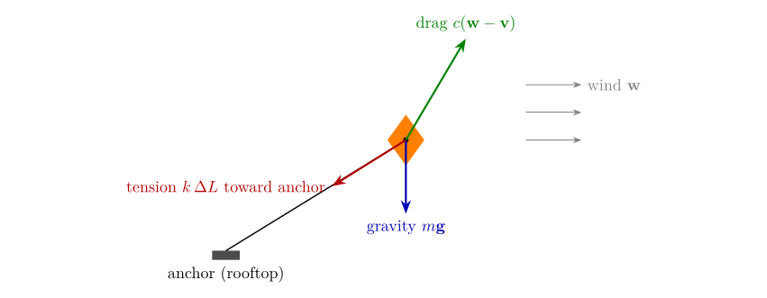
Figure 5.1. Free-body diagram of the kite. Three forces act on one point mass: gravity, the string’s tension (only when stretched beyond its rest length \(L_0\)) and drag from the gusty wind. Newton’s second law, \(m\mathbf{a}=\sum\mathbf{F}\), gives the acceleration.
Watch the result: the finished film as an animated GIF.

5.1 Forces and integration¶
Natural motion comes from Newton's second law: the acceleration of a body is the total force on it divided by its mass, a = F/m. A computer cannot solve this continuously, so it takes small time steps Δt and updates velocity and position in turn. This is numerical integration. The simplest rule, explicit Euler, moves the position with the old velocity:
x ← x + v Δt, v ← v + a Δt.
Semi-implicit (symplectic) Euler updates the velocity first and moves with the new velocity:
v ← v + a Δt, x ← x + v Δt.
The change looks trivial, but it matters. Test both on a spring, where the exact answer is known: a mass on a spring of stiffness k swings for ever with constant energy ½kx² + ½mv². A good method keeps that energy constant.
def spring_energy(method, dt=0.05, steps=400, k=4.0, m=1.0):
x, v = 1.0, 0.0
E = []
for _ in range(steps):
a = -k * x / m
if method == "explicit":
x, v = x + v * dt, v + a * dt
else:
v = v + a * dt
x = x + v * dt
E.append(0.5 * k * x * x + 0.5 * m * v * v)
return np.array(E)
E0 = 0.5 * 4.0 * 1.0 ** 2
ex, si = spring_energy("explicit"), spring_energy("semi")
plt.figure(figsize=(7, 3))
plt.plot(ex / E0, label="explicit Euler"); plt.plot(si / E0, label="semi-implicit Euler")
plt.axhline(1, color="k", lw=0.8, ls=":"); plt.xlabel("step"); plt.ylabel("energy / starting energy")
plt.legend(); plt.title("A spring should keep its energy"); plt.tight_layout(); plt.show()
print(f"after 400 steps (20 s): explicit {ex[-1] / E0:.2f} x start, semi-implicit {si[-1] / E0:.2f} x start "
f"(range {si.min() / E0:.2f} to {si.max() / E0:.2f})")
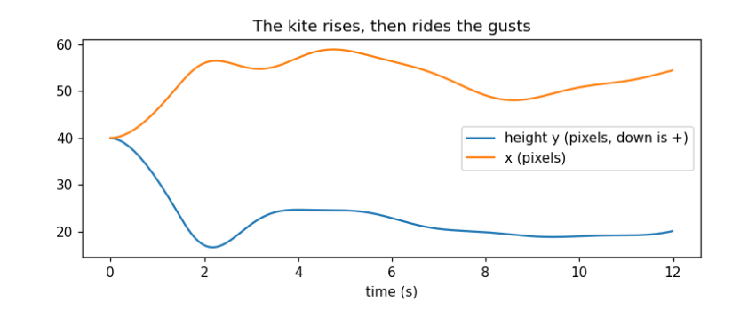
after 400 steps (20 s): explicit 53.52 x start, semi-implicit 1.05 x start (range 0.95 to 1.05)
The dotted line is the truth: energy stays at 1. Explicit Euler (blue) gains energy every step and has grown about fifty-fold after 20 seconds, so a spring drawn with it would fling itself off the screen. Semi-implicit Euler (orange) wobbles a little around 1 but never drifts, so it can run for ever. We use it for everything that moves.
The kite. Basant, the spring kite festival, filled Lahore's sky with kites. Ours is a point mass held by a string from a rooftop at the lower left. Three forces act on it (drawn in the free-body diagram in the guide):
-
Gravity, m g, straight down.
-
String tension from Hooke's law: if the string is stretched beyond its rest length L₀ by ΔL, it pulls towards the anchor with force k ΔL. A string can pull but not push, so the force is zero when slack.
-
Wind, modelled as drag: a force proportional to the difference between the wind velocity and the kite's velocity, c(w − v). The wind blows right and lifts upwards, and it gusts: each component is a constant plus a few sine waves of different periods, so it never quite repeats.
Units are pixels and seconds; g = 20 pixels per second squared is chosen so the motion reads well, not to match the real value of 9.8 m s⁻².
@dataclass
class Kite:
anchor: tuple = (4.0, GROUND - 2.0)
pos: np.ndarray = field(default_factory=lambda: np.array([40.0, 40.0]))
vel: np.ndarray = field(default_factory=lambda: np.zeros(2))
m: float = 1.0; g: float = 20.0; k: float = 6.0; L0: float = 90.0; drag: float = 1.5
def wind(self, t):
return np.array([10 + 4 * math.sin(0.7 * t) + 2 * math.sin(2.3 * t), -30 - 3 * math.sin(1.3 * t)])
def forces(self, t):
d = self.pos - np.array(self.anchor)
L = np.linalg.norm(d)
tension = -self.k * max(L - self.L0, 0) * d / L
gravity = np.array([0.0, self.m * self.g])
air = self.drag * (self.wind(t) - self.vel)
return gravity, tension, air
def step(self, t, dt):
self.vel += sum(self.forces(t)) / self.m * dt
self.pos += self.vel * dt
def draw(self, c):
line(c, *self.anchor, *self.pos, 15)
x, y = self.pos
diamond = (np.abs(X - x) / 3 + np.abs(Y - y) / 4) <= 1
fill(c, diamond, 5); fill(c, diamond & (X > x), 6)
for i in range(1, 6):
put_pixel(c, x - 1 - i * 0.4, y + 3 + i + math.sin(i + x) * 0.8, 9)
kite, dt, track = Kite(), 1 / 80, []
for n in range(80 * 12): # 12 seconds in steps of 1/80 s
kite.step(n * dt, dt)
track.append(kite.pos.copy())
track = np.array(track)
g, T, A = kite.forces(12.0)
print("position after 12 s:", track[-1].round(1), " string length:", round(float(np.linalg.norm(track[-1] - kite.anchor)), 1))
print("forces now gravity:", g.round(1), " tension:", T.round(1), " wind:", A.round(1), " total:", (g + T + A).round(1))
fig, ax = plt.subplots(figsize=(7, 3.2))
ax.plot(np.arange(len(track)) * dt, track[:, 1], label="height y (pixels, down is +)")
ax.plot(np.arange(len(track)) * dt, track[:, 0], label="x (pixels)")
ax.set_xlabel("time (s)"); ax.legend(); ax.set_title("The kite rises, then rides the gusts"); plt.tight_layout(); plt.show()
position after 12 s: [54.5 20.1] string length: 96.2
forces now gravity: [ 0. 20.] tension: [-19.4 31.5] wind: [ 18.3 -48.8] total: [-1.2 2.8]
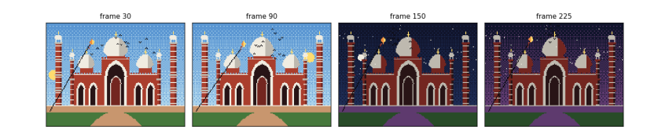
The kite starts at (40, 40) with no speed. In the first few seconds the wind lifts it (y falls, as y counts downwards) and pushes it right until the string goes taut; from then it hovers near the end of its string, swaying as the gusts rise and fall. The printout checks the physics at 12 seconds: the string is a little longer than its rest length of 90, so it is stretched and pulling; the tension points back towards the anchor (down and left, negative x and positive y); and the three forces nearly cancel, so the total is small. A kite at rest on a taut string is exactly a balance of these three forces.
5.2 A flock of pigeons¶
The pigeons of the Badshahi courtyard wheel together. Craig Reynolds (1987) showed that a flock needs no leader: each bird follows three local rules about the neighbours it can see (here, those within 25 pixels).
-
Separation: steer away from birds that are too close (closer than 5 pixels), more strongly the closer they are.
-
Alignment: steer towards the average heading of neighbours.
-
Cohesion: steer towards the average position of neighbours.
We add a fourth, a gentle pull towards a point above the mosque, so the flock stays on screen, and keep each bird's speed between 8 and 22 pixels a second. With numpy all birds are updated at once: d``[``i, j``] is the vector from bird j to bird i, and summing over j adds up the effect of all neighbours.
@dataclass
class Flock:
n: int = 14; seed: int = 3
def __post_init__(self):
rng = np.random.default_rng(self.seed)
self.p = rng.uniform([20, 10], [140, 40], (self.n, 2))
self.v = rng.normal(0, 8, (self.n, 2)) + [12, 0]
def step(self, dt):
d = self.p[:, None, :] - self.p[None, :, :]
dist = np.linalg.norm(d, axis=2) + np.eye(self.n) * 1e9 # a bird is not its own neighbour
near = dist < 25
cnt = near.sum(1, keepdims=True).clip(1)
cohesion = (near[..., None] * -d).sum(1) / cnt * 0.6
alignment = ((near @ self.v) / cnt - self.v) * 0.5
separation = ((dist < 5)[..., None] * d / dist[..., None] ** 2).sum(1) * 60
home = (np.array([80, 25]) - self.p) * 0.4
self.v += (cohesion + alignment + separation + home) * dt
speed = np.linalg.norm(self.v, axis=1, keepdims=True)
self.v *= np.clip(speed, 8, 22) / speed
self.p += self.v * dt
def spread(self):
d = np.linalg.norm(self.p[:, None] - self.p[None], axis=2)
return d[np.triu_indices(self.n, 1)].mean()
def heading_agreement(self):
u = self.v / np.linalg.norm(self.v, axis=1, keepdims=True)
return float(np.linalg.norm(u.mean(0))) # 1 = all fly the same way, 0 = random
def draw(self, c, frame=0):
for i, (x, y) in enumerate(self.p):
dy = -1 if (frame + i) % 4 < 2 else 1 # a two-frame wing flap
put_pixel(c, x, y, 15); put_pixel(c, x - 1, y + dy, 15); put_pixel(c, x + 1, y + dy, 15)
flock = Flock()
print(f"start: mean distance between birds {flock.spread():5.1f} px, heading agreement {flock.heading_agreement():.2f}")
for s in range(1, 201):
flock.step(1 / 20)
if s in (40, 200):
print(f"{s / 20:4.0f} s: mean distance between birds {flock.spread():5.1f} px, heading agreement {flock.heading_agreement():.2f}")
inside = ((flock.p >= 0) & (flock.p < [W, H])).all(1)
print(f"birds inside the canvas: {inside.sum()} of {flock.n}; flock centre at {flock.p.mean(0).round(0)}")
start: mean distance between birds 43.1 px, heading agreement 0.73
2 s: mean distance between birds 20.0 px, heading agreement 0.31
10 s: mean distance between birds 13.5 px, heading agreement 0.54
birds inside the canvas: 12 of 14; flock centre at [63. 7.]
The numbers show a flock forming. At the start the birds are scattered across the sky (43 pixels apart on average) and fairly aligned (0.73), because they were all given a push to the right. Within two seconds they have drawn together (20 pixels apart), and after ten they are packed within about 14 pixels of each other. Heading agreement first falls to 0.31 and then recovers to about a half: the pull towards the mosque turns the flock round, and birds on the inside of a turn point a different way from those outside, so the flock wheels over the dome, as courtyard pigeons do, rather than flying off in a line. The flock centre sits near (63, 7), above the central dome; two birds at the top edge are briefly off the canvas (12 of 14 inside), which is harmless because put_pixel ignores them. No rule mentions 'the flock': it emerges from each bird watching its neighbours, which is why this is called emergent behaviour.
5.3 Putting it together: the film¶
The film loop now has three clocks running together: the phase of the day, the physics time of the kite and birds, and the frame number for the wing flap. The kite takes four small physics steps per frame (sub-stepping) because springs need short steps to stay stable; the birds take one.
def film(n=240, fps=20, substeps=4):
kite, flock, frames = Kite(), Flock(), []
dt = 1 / fps
for f in range(n):
for s in range(substeps):
kite.step(f * dt + s * dt / substeps, dt / substeps)
flock.step(dt)
frames.append(render(-0.05 + 1.1 * f / n, extras=(lambda c, f=f: flock.draw(c, f), kite.draw)))
return frames
frames = film()
save_gif(frames, OUT / "badshahi_film.gif")
fig, axes = plt.subplots(1, 4, figsize=(12, 2.6))
for ax, i in zip(axes, (30, 90, 150, 225)):
show(frames[i], f"frame {i}", ax)
plt.tight_layout(); plt.show()
print(len(frames), "frames saved to", OUT / "badshahi_film.gif", f"({(OUT / 'badshahi_film.gif').stat().st_size / 1e6:.1f} MB)")

240 frames saved to data\badshahi_film.gif (0.4 MB)
Four frames from the twelve-second film. In frame 30 it is morning (phase 0.09): the sun is low on the left, the flock wheels over the central dome and the kite flies to the left on its taut string. In frame 90 (phase 0.36) the sun is high in the west, on the right. Frame 150 (phase 0.64) is deep night: the building has its night colours, the moon has risen and the birds, drawn in black, all but vanish against the sky, as real birds do. Frame 225 (phase 0.98) is the twilight before dawn, with the purple glow low in the sky; the kite still rides the wind. The whole film comes from about 250 lines of code and no drawn images.
5.4 What you have learned¶
-
A picture is an array of palette indices; a palette turns them into colours, and swapping palette entries recolours a scene at once.
-
Lines and circles are drawn with whole-number algorithms (Bresenham, midpoint); filled shapes are inside tests.
-
Architecture can be written as geometry: a Mughal arch is two overlapping discs, an onion dome a width that varies with height.
-
Dithering imitates more colours than the palette has.
-
A scene is a list of components, each a class with a few numbers and a draw method; symmetry halves the work.
-
Animation is drawing the scene as a function of time, many times a second.
-
Motion comes from forces and integration; semi-implicit Euler keeps energy where explicit Euler explodes.
-
Complex group behaviour can emerge from a few local rules.
The guide's later chapters draw the design as diagrams, rebuild the same picture in C as old graphics.h programs did, and turn the film into a game you control.
6. The design as diagrams¶
The program is small, but it already has the shape of larger ones: data describing a scene, components that draw themselves, simulations that advance in time, and a loop that ties them together. Diagrams make that shape visible before the code grows. Each kind answers a different question.
6.1 Class diagram: what the parts are¶
A UML class diagram shows each kind of object, the numbers it holds (attributes) and what it can do (methods). Figure 6.1 shows the program’s classes. The four building components share one method, draw(canvas), so the scene can draw any of them without knowing which it is; this is what programmers call an interface. The kite and the flock add step(dt), which advances the simulation by a time step.

Figure 6.1. Class diagram. Dashed arrows: each building part implements the Component interface. Open diamonds: the scene is an aggregation of components (Arch and Block are aggregated in the same way; their lines are omitted for clarity).
6.2 Data-flow diagram: how data moves¶
A data-flow diagram (DFD) ignores classes and follows the data: where it comes from, which processes transform it, and where it is stored. Figure 6.2 shows one frame. Parameters (the scene list, palette, constants) are stored data; the clock supplies time; processes turn them into a grid of indices and finally into an image file.

Figure 6.2. Level-1 data-flow diagram for one frame. Circles are processes, open boxes are stores, bold boxes are external entities.
6.3 Entity–relationship diagram: the scene as data¶
Because the scene is a list of parts, it could live in a table or database instead of code: change a row and the mosque changes. An entity–relationship diagram (ERD) designs those tables. Figure 6.3 shows one design: a landmark has many components; each component has a type and its own numbers; a component may be the mirror of another. Adding Government College’s tower or the Lahore Museum would mean new rows and perhaps a new component type, not new drawing code for the scene.

Figure 6.3. Entity–relationship diagram for storing landmarks as data. Underlined fields are keys; FK marks a foreign key, a reference to a row in another table. The optional field mirror_of links a component to the one it mirrors, in the same table.
6.4 Which diagram when¶
| Diagram | Question it answers here |
|---|---|
| Free-body (Figure 5.1) | Which forces act on a body, and in which directions? Draw before writing forces(). |
| Class (Figure 6.1) | What kinds of object exist, what they hold and what they can do? |
| Data flow (Figure 6.2) | Where does each piece of data come from and go to in one frame? |
| Entity–relationship (Figure 6.3) | How would the scene be stored as tables so it can be edited without code? |
7. The low level: the same picture in C¶
The Python version leans on numpy to test all 19,200 pixels at once and on Pillow to write image files. Underneath, every graphics system does what this chapter does by hand: it keeps the picture in a block of memory, the framebuffer, and writes bytes into it. The C program pixel_lahore.c in the guide’s c folder draws the same mosque, sun and kite with nothing but the C standard library.
7.1 A framebuffer and BGI-style calls¶
Students who used Dev-C++ with graphics.h (the Borland Graphics Interface, BGI) will recognise the calls. The program defines its own versions, so it compiles anywhere:
static unsigned char fb[H][W]; /* the framebuffer: one palette index per pixel */
static int colour = 15; /* the current colour, as setcolor() sets it */
void setcolor(int c) { colour = c; }
void putpixel(int x, int y, int c) {
if (x >= 0 && x < W && y >= 0 && y < H) fb[y][x] = (unsigned char)c;
}
Every other drawing call is built on putpixel. The line and circle are the Bresenham and midpoint algorithms of Chapter 3, now in integers only:
void line(int x0, int y0, int x1, int y1) {
int dx = abs(x1 - x0), dy = -abs(y1 - y0);
int sx = x0 < x1 ? 1 : -1, sy = y0 < y1 ? 1 : -1, err = dx + dy;
for (;;) {
putpixel(x0, y0, colour);
if (x0 == x1 && y0 == y1) return;
int e2 = 2 * err;
if (e2 >= dy) { err += dy; x0 += sx; }
if (e2 <= dx) { err += dx; y0 += sy; }
}
}
The shapes are the same inside tests, written as two nested loops over rows and columns instead of numpy masks. The pointed arch, for example:
static int in_arch(double x, double y, double cx, double spring, double bottom, double w) {
double off = 0.25 * w, r = w / 2 + off; /* two centres, k = 0.5 */
if (y >= spring) return fabs(x + 0.5 - cx) <= w / 2 && y < bottom;
double a = (x - cx - off) * (x - cx - off) + (y - spring) * (y - spring);
double b = (x - cx + off) * (x - cx + off) + (y - spring) * (y - spring);
return a <= r * r && b <= r * r;
}
Symmetry becomes a loop over the two sides, with \(x \mapsto W - x\) on the second pass, and the kite is a struct of position and velocity updated by the same semi-implicit Euler step.
7.2 Writing an image without a library¶
The simplest image format is PPM: a text header giving the width, height and maximum value, then three bytes (red, green, blue) per pixel. Writing it is a palette lookup per pixel:
void save_ppm(const char *path) {
FILE *f = fopen(path, "wb");
fprintf(f, "P6\n%d %d\n255\n", W, H);
for (int y = 0; y < H; y++)
for (int x = 0; x < W; x++) fwrite(PALETTE[fb[y][x]], 1, 3, f);
fclose(f);
}
7.3 Compile and run¶
With any C compiler (Dev-C++ and Code::Blocks include MinGW’s gcc; on Linux and macOS it is usually installed):
gcc -O2 -Wall -o pixel_lahore pixel_lahore.c -lm
./pixel_lahore
It writes still.ppm and 120 frames, frames/frame_000.ppm to frame_119.ppm, and prints where the kite ended. Compiled with gcc on Windows, it gave no warnings and printed
wrote still.ppm and 120 frames; kite ended at (54.5, 20.1)
which is the same final kite position as the Python notebook’s after twelve seconds, because both integrate the same equations with the same step of \(1/80\) s. Any image viewer that reads PPM (GIMP, IrfanView) opens the frames, and Pillow or the free tool ImageMagick (magick frames/*.ppm film.gif) joins them into a GIF.
Figure 7.1. The still written by the C program, enlarged four times. It matches the Python picture except along some edges: compared pixel by pixel, 531 of the 19,200 pixels (2.8 %) differ, all on the outlines of round shapes, where C rounds coordinates to whole numbers at different points from numpy.
7.4 Where OpenGL and game engines fit¶
graphics.h and this program draw on the processor, one pixel at a time. OpenGL, Direct3D, Vulkan and Metal hand the work to the graphics card, which runs a small program, a shader, for every pixel in parallel. The ideas map across directly:
| This guide | graphics.h |
OpenGL | Note |
|---|---|---|---|
fb array |
screen memory | framebuffer | where the picture lives |
put_pixel |
putpixel |
GL_POINTS |
one pixel at a time is slow on a GPU |
line |
line |
GL_LINES |
rasterised by the card |
| inside-test mask | fillpoly |
fragment shader | a fragment shader is an inside test run for every pixel |
| palette lookup | setpalette |
texture lookup | a 16-entry texture |
| frame loop | cleardevice, delay |
swap buffers | draw to a hidden buffer, then show it |
The pointed-arch test, written in OpenGL’s shading language, would be the same few lines run by the card for every pixel at once. That is why a modern game can draw millions of pixels sixty times a second, while the methods are those you have just written by hand.
8. A real place from evidence: Tollinton Market¶
Lahore’s pixel artists have shown how much feeling an 8-bit picture of a familiar street can carry. This chapter takes the same kind of subject, a real building on a real road, and asks how far it can be built from evidence instead of by eye. The subject is Tollinton Market on Mall Road, built in 1864 as an exhibition hall and now a heritage museum: a long yellow hall with a red tiled roof, stepped Dutch gables and two green cupolas.
Every number in the picture comes from somewhere you can check, and Figure 8.1 shows where. The outline and the streets come from OpenStreetMap; the heights and the colours are measured from an openly licensed photograph; the light comes from the sun’s position on a chosen morning; the sky colour from the physics of scattering; and the traffic from a model used in transport research. Where the evidence runs out, as with the heights of neighbouring buildings, the notebook says what it assumed.
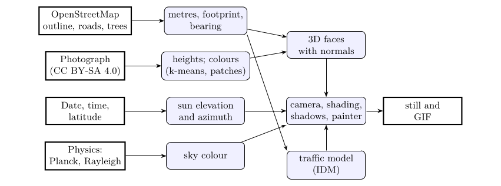
Figure 8.1. Where each part of the picture comes from. Bold boxes are sources of evidence; rounded boxes are the steps of the notebook.
The notebook for this chapter is tollinton.ipynb on the Notebooks page; it needs nothing beyond numpy, matplotlib and Pillow, and downloads its two data files on first run.
Watch the result: traffic on Mall Road as an animated GIF.

Watch an urban sketcher draw the same scene, step by step, with the thinking beside the paper: the video (2.5 minutes) or a faster GIF. Its lines are the true perspective lines of this model, made by sketcher.py.

The final picture at twice the resolution: PNG, JPG, GIF, with traffic; and the steps of this chapter as an animated GIF.


8.1 Setup¶
This notebook draws a real place, Tollinton Market on Mall Road, Lahore, as 8-bit pixel art, and builds every part of the picture from evidence: the building's footprint and the roads around it from OpenStreetMap, its heights and colours measured from an openly licensed photograph, the light from the position of the sun over Lahore on a chosen morning, the sky colour from the physics of scattering, and the traffic from a car-following model used in transport research. Nothing is drawn by hand, and every number is printed so you can check it.
Sources and licences: - Map data © OpenStreetMap contributors, available under the Open Database Licence (openstreetmap.org/copyright). The extract used here was downloaded on 8 November 2026 and ships with this guide. - Photograph: Tollinton Market-Damn Cruze-2018-4.jpg by Shahzaib Damn Cruze, 17 June 2018, Wikimedia Commons, CC BY-SA 4.0. A 960-pixel copy ships with the guide.
Libraries: numpy for arithmetic, matplotlib to show results, Pillow to draw polygons and save images.
import json, math, urllib.request
from datetime import date
from pathlib import Path
import numpy as np
import matplotlib.pyplot as plt
from PIL import Image, ImageDraw
plt.rcParams.update({"figure.dpi": 110})
BASE = "https://raw.githubusercontent.com/AhmadAmmar/AhmadAmmar.github.io/main/guides/pixel-animation/notebooks/data_local/"
DATA, LOCAL = Path("data"), Path("data_local")
DATA.mkdir(exist_ok=True)
for f in ["tollinton_250m.json", "tollinton_front_2018.jpg"]:
if not (DATA / f).exists():
(DATA / f).write_bytes((LOCAL / f).read_bytes() if (LOCAL / f).exists() else urllib.request.urlopen(BASE + f, timeout=60).read())
print(f"{f:28s} {(DATA / f).stat().st_size / 1e3:6.0f} kB")
tollinton_250m.json 75 kB
tollinton_front_2018.jpg 159 kB
8.2 Map data from OpenStreetMap¶
OpenStreetMap (OSM) is a map of the world drawn by volunteers. Each feature has a geometry (a point, or a line of points called a way) and tags, key=value pairs such as building=yes or highway=primary. The Overpass API answers questions about it in a small query language. The query below asks for every building, road, land-use area and tree within 250 m of the market. You can paste it into overpass-turbo.eu to see the result on a map. Here we read the saved answer, so the notebook gives the same picture every time even as the map is edited; set FETCH_LIVE = True to download today's version instead.
CENTRE = (31.5680752, 74.3095212) # centre of the market's OSM outline (way 316864409)
QUERY = f"""[out:json][timeout:120];
( way(316864409);
way(around:250,{CENTRE[0]},{CENTRE[1]})["building"];
way(around:250,{CENTRE[0]},{CENTRE[1]})["highway"];
way(around:250,{CENTRE[0]},{CENTRE[1]})["landuse"];
way(around:250,{CENTRE[0]},{CENTRE[1]})["leisure"];
node(around:250,{CENTRE[0]},{CENTRE[1]})["natural"="tree"]; );
out tags geom;"""
FETCH_LIVE = False
if FETCH_LIVE:
req = urllib.request.Request("https://overpass-api.de/api/interpreter", data=urllib.parse.urlencode({"data": QUERY}).encode(),
headers={"User-Agent": "pixel-animation-guide"})
(DATA / "tollinton_250m.json").write_bytes(urllib.request.urlopen(req, timeout=180).read())
osm = json.loads((DATA / "tollinton_250m.json").read_text(encoding="utf8"))
elements = osm["elements"]
kinds = {}
for e in elements:
t = e["tags"]
k = "building" if "building" in t else f"road ({t['highway']})" if "highway" in t else "tree" if t.get("natural") == "tree" else "other"
kinds[k] = kinds.get(k, 0) + 1
print("map data timestamp:", osm["osm3s"]["timestamp_osm_base"], "\n", len(elements), "features")
for k, n in sorted(kinds.items(), key=lambda kv: -kv[1])[:10]:
print(f" {k:24s} {n}")
market = next(e for e in elements if e["id"] == 316864409)
print("the market:", market["tags"])
map data timestamp: 2026-11-08T18:45:20Z
116 features
building 37
road (service) 25
tree 9
road (residential) 9
road (living_street) 6
other 6
road (primary) 5
road (unclassified) 5
road (construction) 4
road (footway) 4
the market: {'building': 'yes', 'name': 'Historic Tollinton Market Building'}
The extract holds 116 features: 37 buildings, many roads of different classes, and a few trees. The market itself is tagged only building=yes with its name: OSM knows its outline but not its height, its roof or its colour. That is common, and it decides the plan: the outline and the streets come from the map, and the rest must be measured from somewhere else.
8.3 From degrees to metres¶
OSM stores positions as latitude and longitude in degrees. To build anything we need metres. Over a few hundred metres the Earth is flat enough to use a local tangent plane: one degree of latitude is always about 111.2 km (the Earth's radius times π/180), and one degree of longitude is that times the cosine of the latitude, because the circles of latitude shrink towards the poles. At Lahore, 31.6° N, a degree of longitude is about 94.7 km.
We put the origin at the market's centre, with x to the east, y to the north and z up. To check the approximation we compare a distance computed this way with the exact great-circle (haversine) distance.
R_EARTH = 6371008.8
LAT0, LON0 = CENTRE
def to_xy(lat, lon):
return (R_EARTH * math.cos(math.radians(LAT0)) * math.radians(lon - LON0), R_EARTH * math.radians(lat - LAT0))
def haversine(p, q):
(la1, lo1), (la2, lo2) = [(math.radians(a), math.radians(b)) for a, b in (p, q)]
h = math.sin((la2 - la1) / 2) ** 2 + math.cos(la1) * math.cos(la2) * math.sin((lo2 - lo1) / 2) ** 2
return 2 * R_EARTH * math.asin(math.sqrt(h))
print(f"1 degree of latitude = {R_EARTH * math.pi / 180 / 1000:.1f} km, of longitude here = "
f"{R_EARTH * math.pi / 180 * math.cos(math.radians(LAT0)) / 1000:.1f} km")
far = (LAT0 + 0.002, LON0 + 0.002)
flat = math.dist((0, 0), to_xy(*far))
print(f"distance to a point ~290 m away: flat {flat:.2f} m, haversine {haversine(CENTRE, far):.2f} m, "
f"difference {abs(flat - haversine(CENTRE, far)) * 100:.1f} cm")
1 degree of latitude = 111.2 km, of longitude here = 94.7 km
distance to a point ~290 m away: flat 292.16 m, haversine 292.16 m, difference 0.1 cm
Over about 290 m the flat-Earth distance differs from the exact one by well under a centimetre, far below one pixel of our picture, so the simple formula is good enough here. (Over tens of kilometres it would not be, and a proper map projection such as UTM would be used.)
8.4 Reading the map¶
Now convert every feature to metres and look at it. Buildings are closed ways (polygons); roads are open ways (lines); trees are points. We measure the market's outline: the length of each side and its bearing, the compass direction of the long side measured clockwise from north.
def xy_of(e):
return np.array([to_xy(p["lat"], p["lon"]) for p in e["geometry"]])
buildings = [e for e in elements if "building" in e["tags"] and e["type"] == "way" and e["tags"]["building"] != "roof"]
roads = [e for e in elements if "highway" in e["tags"] and e["type"] == "way"]
trees = [np.array(to_xy(e["lat"], e["lon"])) for e in elements if e["tags"].get("natural") == "tree"]
foot = xy_of(market)[:-1] # four corners (the last point repeats the first)
sides = [(np.linalg.norm(foot[(i + 1) % 4] - foot[i]), math.degrees(math.atan2(*(foot[(i + 1) % 4] - foot[i]))) % 180) for i in range(4)]
for i, (length, bearing) in enumerate(sides):
print(f"side {i}: {length:5.1f} m, bearing {bearing:5.1f} deg")
L_MARKET, W_MARKET = max(s[0] for s in sides), min(s[0] for s in sides)
BEARING = next(b for s, b in sides if s == L_MARKET)
print(f"footprint {L_MARKET:.1f} m x {W_MARKET:.1f} m = {L_MARKET * W_MARKET:.0f} m2; long axis points {BEARING:.0f} deg (east-south-east)")
fig, ax = plt.subplots(figsize=(7, 6))
width = {"primary": 3, "secondary": 2, "tertiary": 1.5}
for r in roads:
g = xy_of(r); ax.plot(g[:, 0], g[:, 1], color="0.55", lw=width.get(r["tags"]["highway"], 0.7))
for b in buildings:
g = xy_of(b); is_m = b["id"] == market["id"]
ax.fill(g[:, 0], g[:, 1], color="#e8a33a" if is_m else "#c9c0b0", ec="k", lw=0.5)
name = b["tags"].get("name:en", b["tags"].get("name", ""))
if name and all(ord(ch) < 128 for ch in name) and abs(g[:, 0].mean()) < 230 and abs(g[:, 1].mean()) < 230:
ax.text(g[:, 0].mean(), g[:, 1].mean(), name.replace("Historic ", ""), fontsize=6, ha="center")
if trees:
ax.scatter(*np.array(trees).T, color="green", s=12, label="trees")
ax.set_aspect("equal"); ax.set_xlim(-250, 250); ax.set_ylim(-250, 250)
ax.set_xlabel("x, metres east of the market"); ax.set_ylabel("y, metres north"); ax.set_title("OSM within 250 m (thick grey: Mall Road)")
plt.tight_layout(); plt.show()
side 0: 72.8 m, bearing 111.9 deg
side 1: 26.8 m, bearing 21.9 deg
side 2: 72.8 m, bearing 111.9 deg
side 3: 26.8 m, bearing 21.9 deg
footprint 72.8 m x 26.8 m = 1951 m2; long axis points 112 deg (east-south-east)
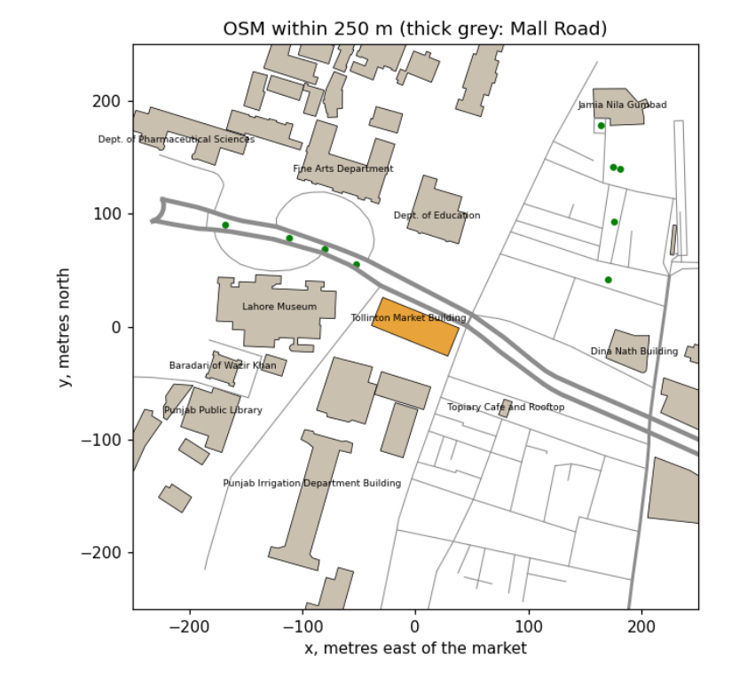
The market (orange) is a rectangle 72.8 m long and 26.8 m wide, nearly 2,000 m², with its long side pointing 112° (east-south-east), parallel to Mall Road, the thick grey lines running across the map. The museum, the YMCA, the Punjab Public Library and the university departments are its neighbours. Two facts follow for the picture. The long façade that faces Mall Road faces 22° (north-north-east): a direction the sun reaches only on summer mornings and evenings, so the time of day must be chosen with care. And a viewer standing on Mall Road looks at the market across the road, which is where we will put our camera.
8.5 Heights from a photograph¶
The map has no heights, so we measure them from a photograph taken square to the front, using proportion: in such a photo, heights and widths on the façade are drawn at the same scale. We need one known length to set that scale. The two green cupolas are a good ruler: from the oblique photos on Wikimedia Commons, each sits about 15 % of the building's length in from its end, so they are about 0.70 × 72.8 = 51 m apart. In the frontal photo they are 650 pixels apart, which gives the scale. The rows of the ground, the verandah eave, the main eave, the roof's visible top edge and the cupola tops were read off the photo with an image viewer.
Two corrections are needed, and both are physics of the camera. First, the photo is not perfectly square, so the result is uncertain by roughly ±15 %. Second, the ridge is set back from the façade, about 10 m behind it, so it is farther from the camera and appears lower than it is (things farther away look smaller). Rather than trust its apparent height, we take the roof's slope from the side photos, about 35°, and compute the ridge from the eave.
photo = Image.open(DATA / "tollinton_front_2018.jpg")
ROWS = {"ground": 390, "verandah eave": 335, "main eave": 230, "roof top edge (apparent)": 168, "cupola top": 60}
CUPOLA_PX, CUPOLA_M = 828 - 178, 0.70 * L_MARKET
scale = CUPOLA_PX / CUPOLA_M
print(f"scale: {CUPOLA_PX} px for {CUPOLA_M:.1f} m = {scale:.1f} px per metre")
for k, row in ROWS.items():
print(f" {k:26s} row {row:3d} -> {(ROWS['ground'] - row) / scale:5.1f} m above the ground")
VERANDA = 3.0 # depth of the verandah, from the photos
H = dict(eave=(ROWS["ground"] - ROWS["main eave"]) / scale,
verandah=(ROWS["ground"] - ROWS["verandah eave"]) / scale)
H["wall_width"] = W_MARKET - 2 * VERANDA
H["ridge"] = H["eave"] + H["wall_width"] / 2 * math.tan(math.radians(35))
H["cupola_top"] = (ROWS["ground"] - ROWS["cupola top"]) / scale
print("heights used: " + ", ".join(f"{k} {v:.1f} m" for k, v in H.items()))
fig, ax = plt.subplots(figsize=(8, 4.5))
ax.imshow(photo)
for k, row in ROWS.items():
ax.axhline(row, color="cyan", lw=0.8); ax.text(5, row - 4, k, color="cyan", fontsize=7)
ax.plot([178, 828], [20, 20], color="magenta"); ax.text(450, 15, "cupola spacing = ruler", color="magenta", fontsize=7, ha="center")
ax.set_axis_off(); ax.set_title("Measurements on the photo (S. Damn Cruze, CC BY-SA 4.0)", fontsize=9)
plt.tight_layout(); plt.show()
scale: 650 px for 50.9 m = 12.8 px per metre
ground row 390 -> 0.0 m above the ground
verandah eave row 335 -> 4.3 m above the ground
main eave row 230 -> 12.5 m above the ground
roof top edge (apparent) row 168 -> 17.4 m above the ground
cupola top row 60 -> 25.9 m above the ground
heights used: eave 12.5 m, verandah 4.3 m, wall_width 20.8 m, ridge 19.8 m, cupola_top 25.9 m
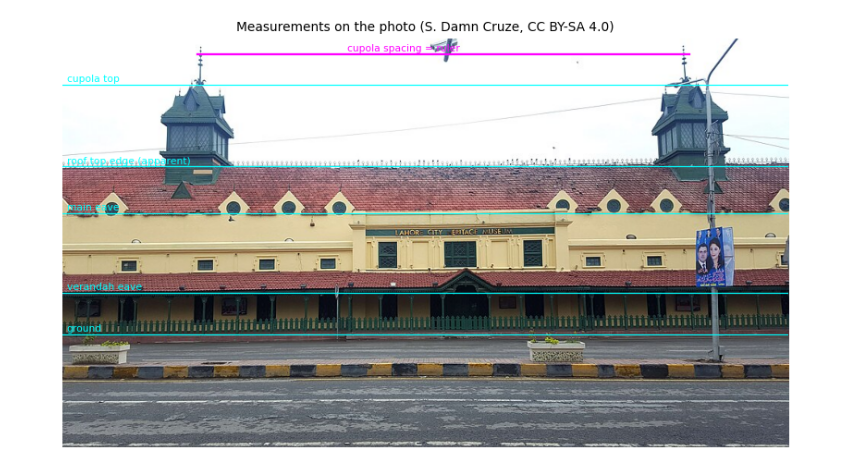
The scale is about 12.8 pixels per metre. The main walls are about 12.5 m high (two tall Victorian storeys), the verandah eave 4.3 m, and the cupolas reach about 26 m. The roof's apparent top edge would put the ridge at only 17.4 m, but that edge is about 10 m behind the façade and so looks lower than it is; with a 35° slope over half the wall width the ridge is about 20 m. These are estimates, good to perhaps ±15 %, and they are written down so anyone with a better measurement (a survey, a LiDAR scan, or a shadow on a satellite image: height = shadow length × tan(sun elevation)) can replace them.
8.6 Colours from a photograph¶
Where should an 8-bit palette come from? For a real place, from the place. A photograph contains hundreds of thousands of colours; we want a dozen that represent it. k-means clustering finds them: start with k random colours, give every pixel to the nearest one, move each colour to the average of its pixels, and repeat until nothing changes. The final averages are the palette. Then we name the materials by sampling the photo at a point on each (wall, roof, cupola, kerb, road) and taking the nearest palette colour.
The photo was taken under cloud, so it shows each surface under soft, even light. In sunshine a surface is brighter where it faces the sun. Lambert's cosine law says the light a matte surface receives from the sun is proportional to the cosine of the angle between the surface's outward direction (its normal) and the sun, plus a steady share from the whole sky. We use it to make three tones per material, in shade, half lit and fully lit: brightness ∝ E_sky + E_sun cos θ, with the sky giving about 45 % as much as direct sun on a facing wall.
def kmeans(X, k, iters=25, seed=0):
rng = np.random.default_rng(seed)
C = X[rng.choice(len(X), k, replace=False)].astype(float)
for _ in range(iters):
label = ((X[:, None, :] - C[None]) ** 2).sum(2).argmin(1)
C = np.array([X[label == j].mean(0) if (label == j).any() else C[j] for j in range(k)])
return C, label
px = np.asarray(photo.convert("RGB"), dtype=float)
#### White balance: a surface we know to be neutral grey should come out grey; any tint it has is the camera's.
#### The overcast sky is the usual choice, but here it is overexposed (every channel at 255), so it carries no colour
#### information. Asphalt is close to neutral, so we use the road instead, and scale each channel to make it grey.
sky_patch = np.median(px[20:50, 300:700].reshape(-1, 3), axis=0)
grey = np.median(px[460:530, 100:900].reshape(-1, 3), axis=0)
gain = grey.mean() / grey
px = np.clip(px * gain, 0, 255)
print("sky patch", sky_patch.round(), "(clipped); road patch", grey.round(), "-> channel gains", gain.round(3))
sample = px[::4, ::4].reshape(-1, 3)
centres, label = kmeans(sample, 12)
share = np.bincount(label, minlength=12) / len(label)
order = np.argsort(-share)
#### Each material is measured over a patch of the photo, keeping only pixels that pass a simple colour rule, so that
#### moss on the tiles or the dark gaps between kerb stones do not spoil the average. Boxes are (x0, y0, x1, y1).
PATCH = {"wall": ((420, 240, 640, 262), lambda r, g, b: r > 180),
"roof": ((250, 172, 620, 200), lambda r, g, b: r > g + 30),
"cupola": ((140, 65, 215, 95), lambda r, g, b: g > r),
"railing": ((60, 372, 900, 384), lambda r, g, b: g > r + 10),
"kerb yellow": ((0, 432, 960, 444), lambda r, g, b: (r > 150) & (r > b + 60)),
"kerb dark": ((0, 432, 960, 444), lambda r, g, b: (r < 90) & (abs(r - b) < 25)),
"road": ((100, 460, 900, 530), lambda r, g, b: r > 0),
"window": ((505, 268, 545, 300), lambda r, g, b: r < 90)}
material = {}
for name, ((x0, y0, x1, y1), rule) in PATCH.items():
patch = px[y0:y1, x0:x1].reshape(-1, 3)
keep = patch[rule(*patch.T)]
material[name] = np.median(keep, axis=0).round().astype(int)
near = order.tolist().index(((centres - material[name]) ** 2).sum(1).argmin())
print(f"{name:12s} {len(keep):6d} pixels kept -> median colour {material[name]} (nearest k-means colour: no. {near + 1})")
fig, ax = plt.subplots(figsize=(8, 1.4))
ax.imshow(centres[order][None].astype(np.uint8), aspect="auto")
for i, j in enumerate(order):
ax.text(i, 0, f"{share[j] * 100:.0f}%", ha="center", va="center", fontsize=8, color="w" if centres[j].mean() < 128 else "k")
ax.set_axis_off(); ax.set_title("12 colours found by k-means, by share of the photo", fontsize=9); plt.show()
E_SKY, E_SUN = 0.7, 1.0
TONE_COS = (0.0, 0.35, 0.8) # shade, half lit, fully lit
def ramp(rgb):
ref = E_SKY + E_SUN * 0.8 # the bright overcast photo is treated as the sunlit tone
return [tuple(int(min(255, c * (E_SKY + E_SUN * k) / ref)) for c in rgb) for k in TONE_COS]
print("wall tones (shade, half, lit):", ramp(material["wall"]))
sky patch [255. 255. 255.] (clipped); road patch [100. 106. 113.] -> channel gains [1.063 1.003 0.941]
wall 1962 pixels kept -> median colour [225 200 152] (nearest k-means colour: no. 5)
roof 7453 pixels kept -> median colour [161 115 117] (nearest k-means colour: no. 9)
cupola 1628 pixels kept -> median colour [ 91 120 136] (nearest k-means colour: no. 3)
railing 6130 pixels kept -> median colour [32 55 46] (nearest k-means colour: no. 4)
kerb yellow 530 pixels kept -> median colour [161 117 60] (nearest k-means colour: no. 9)
kerb dark 5417 pixels kept -> median colour [54 56 60] (nearest k-means colour: no. 4)
road 55990 pixels kept -> median colour [106 106 106] (nearest k-means colour: no. 3)
window 1255 pixels kept -> median colour [38 56 56] (nearest k-means colour: no. 4)
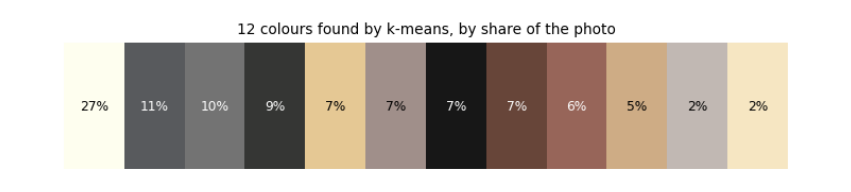
wall tones (shade, half, lit): [(105, 93, 70), (157, 139, 106), (225, 200, 152)]
Three things happened here, each a lesson. White balance: the photo's sky is overexposed, every channel at 255, so it cannot tell us the camera's tint; the asphalt, which is close to neutral grey, could, and it was slightly blue (100, 106, 114). Scaling red up 7 % and blue down 6 % makes it grey and corrects every other colour the same way. The palette strip shows the photo's twelve k-means colours by share: the clipped white sky (27 %), greys of road and pavement, then the plaster yellows and tile reds; no cluster is green, because the cupolas and railing are too small a share of the picture. Measuring materials: k-means alone mixes small things into big clusters (the cluster nearest the kerb stones' ochre is a tile red), so each material is measured directly as the median of a patch, keeping only pixels that pass a colour rule. The wall is a warm yellow (226, 200, 150), the roof a faded terracotta (162, 116, 116), the cupolas a weathered blue-green, the railing dark green, the kerb ochre and charcoal. Lambert's law then gives three tones per material; the wall's shade tone is under half as bright as its sunlit tone, as on a sunny Lahore morning.
8.7 The sun over Lahore¶
Light and shadow depend on where the sun is. Its position follows from astronomy: the Earth's axis is tilted 23.44°, so through the year the sun's declination (its latitude in the sky) swings between +23.44° in June and −23.44° in December; and the Earth turns 15° an hour, which sets the hour angle. Spherical trigonometry turns latitude, declination and hour angle into the sun's elevation above the horizon and its azimuth (compass direction). We use the formulas of the US National Oceanic and Atmospheric Administration (NOAA), which also correct for the Earth's elliptical orbit (the equation of time).
A check we can do by hand: at local solar noon the elevation is 90° − latitude + declination: 81.9° at the June solstice and 35.0° at the December solstice for Lahore.
def sun_position(day, hour, lat=LAT0, lon=LON0, tz=5.0):
"""Elevation and azimuth (degrees) of the sun; hour is local clock time, tz hours ahead of UTC (Pakistan: 5)."""
n = day.timetuple().tm_yday
g = 2 * math.pi / 365 * (n - 1 + (hour - tz - 12) / 24)
eqt = 229.18 * (0.000075 + 0.001868 * math.cos(g) - 0.032077 * math.sin(g) - 0.014615 * math.cos(2 * g) - 0.040849 * math.sin(2 * g))
decl = (0.006918 - 0.399912 * math.cos(g) + 0.070257 * math.sin(g) - 0.006758 * math.cos(2 * g)
+ 0.000907 * math.sin(2 * g) - 0.002697 * math.cos(3 * g) + 0.00148 * math.sin(3 * g))
solar_minutes = hour * 60 + eqt + 4 * lon - 60 * tz
ha = math.radians(solar_minutes / 4 - 180)
phi = math.radians(lat)
elev = math.asin(math.sin(phi) * math.sin(decl) + math.cos(phi) * math.cos(decl) * math.cos(ha))
az = math.atan2(math.sin(ha), math.cos(ha) * math.sin(phi) - math.tan(decl) * math.cos(phi)) + math.pi
return math.degrees(elev), math.degrees(az) % 360
def sun_vector(elev, az):
e, a = math.radians(elev), math.radians(az)
return np.array([math.cos(e) * math.sin(a), math.cos(e) * math.cos(a), math.sin(e)])
for d in (date(2026, 6, 21), date(2026, 12, 21)):
best = max((sun_position(d, h / 60)[0], h) for h in range(10 * 60, 14 * 60))
print(f"{d}: highest {best[0]:.1f} deg at {best[1] // 60}:{best[1] % 60:02d} PKT")
DAY, HOUR = date(2026, 6, 21), 7.5
ELEV, AZ = sun_position(DAY, HOUR)
SUN = sun_vector(ELEV, AZ)
facade_normal = BEARING - 90 # the façade facing Mall Road points 22 deg
print(f"chosen moment: {DAY} 07:30 PKT, sun elevation {ELEV:.1f} deg, azimuth {AZ:.1f} deg")
print(f"angle between sun and Mall Road facade: {abs((AZ - facade_normal + 180) % 360 - 180):.0f} deg -> lit")
fig, ax = plt.subplots(figsize=(7, 3.2))
for d, col in ((date(2026, 6, 21), "tab:orange"), (date(2026, 3, 20), "tab:green"), (date(2026, 12, 21), "tab:blue")):
hrs = np.arange(5, 20.01, 0.25); pos = np.array([sun_position(d, h) for h in hrs]); up = pos[:, 0] > 0
ax.plot(pos[up, 1], pos[up, 0], color=col, label=str(d))
ax.axvline(facade_normal, color="k", ls=":"); ax.text(facade_normal + 3, 60, "facade faces 22 deg", fontsize=7)
ax.scatter([AZ], [ELEV], color="red", zorder=5, label="our moment")
ax.set_xlabel("azimuth (deg from north)"); ax.set_ylabel("elevation (deg)"); ax.legend(fontsize=7); ax.set_title("The sun's path over Lahore")
plt.tight_layout(); plt.show()
2026-06-21: highest 81.9 deg at 12:04 PKT
2026-12-21: highest 35.0 deg at 12:00 PKT
chosen moment: 2026-06-21 07:30 PKT, sun elevation 29.7 deg, azimuth 79.2 deg
angle between sun and Mall Road facade: 57 deg -> lit
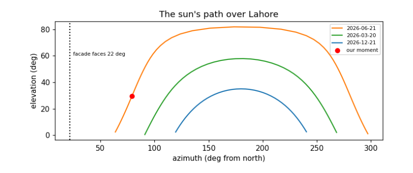
The checks pass: the computed noon elevations, 81.9° in June and 35.0° in December, match the hand formula to the decimal. Noon falls at 12:04 in June and 12:00 in December: Pakistan's clocks are set for 75° E, Lahore lies 0.7° west of that, which makes its noon about 3 minutes late, and the equation of time adds about 2 minutes in June and takes about 2 away in December. The plot shows the sun's path on three days. Only in summer does the sun rise north of east (azimuth below 90°) and so reach the façade facing 22°, and only in the early morning. At 07:30 on 21 June the sun is about 30° high and 79° round from north, 57° from straight-on to the façade: the long front is lit at a slant, and the east end, facing 112°, much more directly. That is the moment we draw.
8.8 A 3D model from a footprint¶
A 3D model for a renderer is a list of flat faces, each a polygon of 3D points with a material. We describe the market in its own coordinates, s along its length, t across it (positive towards Mall Road) and z up, and turn them into map coordinates with the building's centre and axes. Everything is generated from the few numbers measured above: walls from the footprint, a pitched roof to the ridge, stepped (Dutch) gables at the ends, a lean-to verandah on posts, dormers along the roof, rows of windows, and two cupolas.
Each face also needs its normal, the direction it faces, for lighting and to know which side is outside. Newell's method computes it for any flat polygon by summing over its edges; we then make sure it points away from the inside of the solid.
CEN = foot.mean(0)
A = np.array([math.sin(math.radians(BEARING)), math.cos(math.radians(BEARING))]) # along the length
B = np.array([-A[1], A[0]]) # across, rotated 90 deg
mall = [r for r in roads if r["tags"]["highway"] == "primary"]
nearest_road = min((p for r in mall for p in xy_of(r)), key=lambda p: np.linalg.norm(p - CEN))
if np.dot(nearest_road - CEN, B) < 0:
B = -B # t > 0 points to Mall Road
def W(s, t, z):
p = CEN + s * A + t * B
return np.array([p[0], p[1], z])
def newell(pts):
n = np.zeros(3)
for p, q in zip(pts, np.roll(pts, -1, axis=0)):
n += [(p[1] - q[1]) * (p[2] + q[2]), (p[2] - q[2]) * (p[0] + q[0]), (p[0] - q[0]) * (p[1] + q[1])]
return n / (np.linalg.norm(n) or 1)
FACES = []
def face(pts, mat, inside=None, decal_of=None, two_sided=False, group="model"):
pts = np.array(pts, float)
n = newell(pts)
if inside is not None and np.dot(n, pts.mean(0) - inside) < 0:
n = -n
if decal_of is not None:
n = FACES[decal_of]["n"] # a window faces the way its wall faces
FACES.append(dict(pts=pts, mat=mat, n=n, decal_of=decal_of, two_sided=two_sided, group=group))
return len(FACES) - 1
def box(s0, s1, t0, t1, z0, z1, mat, group="model"):
inside = W((s0 + s1) / 2, (t0 + t1) / 2, (z0 + z1) / 2)
c = [(s0, t0), (s1, t0), (s1, t1), (s0, t1)]
ids = [face([W(*c[i], z0), W(*c[(i + 1) % 4], z0), W(*c[(i + 1) % 4], z1), W(*c[i], z1)], mat, inside, group=group) for i in range(4)]
ids.append(face([W(*p, z1) for p in c], mat, inside, group=group))
return ids
def window(parent, s, t_face, z0, z1, w, out, arch=True):
"""A dark opening on a wall: a rectangle with a pointed top, a hair in front of the wall."""
t = t_face + 0.05 * out
pts = [W(s - w / 2, t, z0), W(s + w / 2, t, z0), W(s + w / 2, t, z1)] + ([W(s, t, z1 + w * 0.4)] if arch else []) + [W(s - w / 2, t, z1)]
face(pts, "window", decal_of=parent)
def build_market():
L, Wm, He, Hr, Hv = L_MARKET, H["wall_width"], H["eave"], H["ridge"], H["verandah"]
inside = W(0, 0, He / 2)
for side in (+1, -1): # long walls with two rows of windows
wall = face([W(-L / 2, side * Wm / 2, 0), W(L / 2, side * Wm / 2, 0), W(L / 2, side * Wm / 2, He), W(-L / 2, side * Wm / 2, He)], "wall", inside)
for s in np.arange(-L / 2 + 3, L / 2 - 2, 5.2):
window(wall, s, side * Wm / 2, 7.5, 9.6, 1.6, side)
window(wall, s + 2.6, side * Wm / 2, 0.6, 3.4, 1.8, side, arch=False)
face([W(-L / 2, side * Wm / 2, He), W(L / 2, side * Wm / 2, He), W(L / 2, 0, Hr), W(-L / 2, 0, Hr)], "roof", inside)
for s in np.arange(-L / 2 + 6, L / 2 - 4, 6.5): # dormers: small gables standing on the roof
t = side * (Wm / 2 - 1.2); zb = He + 1.2 * math.tan(math.radians(35))
d = face([W(s - 1.3, t, zb), W(s + 1.3, t, zb), W(s, t, zb + 2.2)], "wall", inside)
face([W(s + 0.45 * math.cos(k), t + 0.05 * side, zb + 0.8 + 0.45 * math.sin(k)) for k in np.linspace(0, 2 * math.pi, 8, endpoint=False)], "window", decal_of=d)
for end in (+1, -1): # stepped Dutch gables at both ends
steps, prof = 5, []
for k in range(steps):
t0, t1 = Wm / 2 * (1 - k / steps), Wm / 2 * (1 - (k + 1) / steps)
z = He + (Hr - He) * (k + 1) / steps + 1.0
prof += [(t0, z), (t1, z)]
outline = [(Wm / 2, 0), (Wm / 2, He)] + prof + [(0, Hr + 2.2)] + [(-t, z) for t, z in reversed(prof)] + [(-Wm / 2, He), (-Wm / 2, 0)]
g = face([W(end * L / 2, t, z) for t, z in outline], "wall", inside)
face([W(end * (L / 2 + 0.05), 1.0 * math.cos(k), He + 3.5 + 1.0 * math.sin(k)) for k in np.linspace(0, 2 * math.pi, 10, endpoint=False)], "window", decal_of=g)
for t in (-6, -2, 2, 6):
face([W(end * (L / 2 + 0.05), t + dt, z) for dt, z in ((-0.8, 0.6), (0.8, 0.6), (0.8, 3.4), (-0.8, 3.4))], "window", decal_of=g)
for side in (+1, -1): # lean-to verandah on green posts
vin = W(0, side * (Wm / 2 + VERANDA / 2), Hv / 2)
face([W(-L / 2 - VERANDA, side * (Wm / 2 + VERANDA), Hv), W(L / 2 + VERANDA, side * (Wm / 2 + VERANDA), Hv),
W(L / 2, side * Wm / 2, Hv + 2.0), W(-L / 2, side * Wm / 2, Hv + 2.0)], "roof", vin)
for s in np.arange(-L / 2 - VERANDA + 0.3, L / 2 + VERANDA, 3.6):
box(s, s + 0.3, side * (Wm / 2 + VERANDA) - 0.3 * (side > 0), side * (Wm / 2 + VERANDA) + 0.3 * (side < 0), 0, Hv, "railing")
for s_c in (-0.35 * L, 0.35 * L): # two cupolas on the ridge
box(s_c - 2.0, s_c + 2.0, -2.0, 2.0, Hr - 1.5, Hr + 1.0, "cupola")
body = box(s_c - 1.6, s_c + 1.6, -1.6, 1.6, Hr + 1.0, Hr + 3.6, "cupola")
for f in body[:4]:
p = FACES[f]["pts"]; c = p.mean(0); n = FACES[f]["n"]
u = (p[1] - p[0]) / np.linalg.norm(p[1] - p[0])
face([c + n * 0.05 + u * du + np.array([0, 0, dz]) for du, dz in ((-0.9, -0.9), (0.9, -0.9), (0.9, 0.9), (-0.9, 0.9))], "window", decal_of=f)
apex = W(s_c, 0, H["cupola_top"])
base = [W(s_c + a, b, Hr + 3.6) for a, b in ((-2.0, -2.0), (2.0, -2.0), (2.0, 2.0), (-2.0, 2.0))]
for i in range(4):
face([base[i], base[(i + 1) % 4], apex], "cupola", W(s_c, 0, Hr + 4.5))
build_market()
n_market = len(FACES)
print(n_market, "faces in the market model, of which", sum(f["decal_of"] is not None for f in FACES), "are windows")
fig, axes = plt.subplots(1, 2, figsize=(11, 3.4))
for f in FACES:
p = np.vstack([f["pts"], f["pts"][:1]])
s = (p[:, :2] - CEN) @ A; t = (p[:, :2] - CEN) @ B
axes[0].plot(s, p[:, 2], lw=0.4, color="k"); axes[1].plot(t, p[:, 2], lw=0.4, color="k")
axes[0].set_title("side view (along the length)"); axes[1].set_title("end view (across)")
for ax in axes:
ax.set_aspect("equal"); ax.set_ylabel("height (m)")
axes[0].set_xlabel("s (m)"); axes[1].set_xlabel("t (m), Mall Road to the right")
plt.tight_layout(); plt.show()
370 faces in the market model, of which 94 are windows
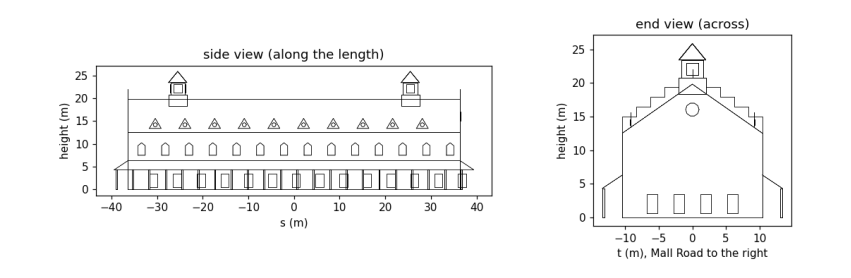
The two wireframes are the model seen from the side and from the end, drawn straight from the face list. In the side view you can count the rhythm of upper windows (every 5.2 m) and ground-floor openings between them, the dormers along the roof and the two cupolas rising to about 26 m; in the end view the stepped gable climbs above the roof line in five steps to its top at about 22 m, with the round window, and the verandah roofs lean against both long walls. Every number in it traces back to the map or the photo.
8.9 The neighbourhood: roads and other buildings¶
The market does not stand alone. From the same OSM data we lay the roads on the ground as strips of the right width (from the lanes tag where mapped, otherwise a typical width for the road class), add the yellow-and-black kerb stones that edge Lahore's main roads and dashed lane markings, and raise the other buildings as plain blocks. OSM gives a height for almost none of them, so we use building:levels × 3.2 m where it exists and 9 m otherwise, and say so. The trees mapped in OSM are added once the camera is placed, since they are drawn as flat cut-outs facing it.
ROAD_W = {"primary": 10.5, "secondary": 8.0, "tertiary": 7.0, "residential": 5.0, "service": 4.0, "living_street": 4.0, "unclassified": 5.0, "pedestrian": 4.0, "footway": 2.0}
def strip(line, width, offset=0.0):
"""Quads covering a polyline: each segment widened by `width`, shifted sideways by `offset`."""
quads = []
for p, q in zip(line, line[1:]):
d = (q - p) / (np.linalg.norm(q - p) or 1); n = np.array([-d[1], d[0]])
a, b = p + n * offset, q + n * offset
quads.append([np.r_[a - n * width / 2, 0], np.r_[b - n * width / 2, 0], np.r_[b + n * width / 2, 0], np.r_[a + n * width / 2, 0]])
return quads
def dashes(line, every, length):
"""Cut a polyline into pieces: `length` metres drawn, the rest of each `every` metres skipped."""
out, pos = [], 0.0
for p, q in zip(line, line[1:]):
seg = np.linalg.norm(q - p); d = (q - p) / (seg or 1)
for x in np.arange(-(pos % every), seg, every):
a, b = max(x, 0), min(x + length, seg)
if b > a:
out.append((p + d * a, p + d * b))
pos += seg
return out
GROUND = [] # flat faces drawn first, in this order
for r in sorted(roads, key=lambda r: ROAD_W.get(r["tags"]["highway"], 3)):
hw = r["tags"]["highway"]
w = float(r["tags"]["lanes"]) * 3.5 if r["tags"].get("lanes", "").isdigit() else ROAD_W.get(hw, 3)
line = xy_of(r)
GROUND += [(q, "road") for q in strip(line, w)]
if hw == "primary":
for side in (-1, 1): # kerb stones: 1 m yellow, then 1 m dark, along both edges
for a, b in dashes(line, 2.0, 1.0):
GROUND += [(q, "kerb yellow") for q in strip(np.array([a, b]), 0.4, side * w / 2)]
GROUND += [(q, "kerb dark") for q in strip(np.array([b, 2 * b - a]), 0.4, side * w / 2)]
GROUND += [(q, "marking") for a, b in dashes(line, 9.0, 3.0) for q in strip(np.array([a, b]), 0.2)]
for bld in buildings:
if bld["id"] == market["id"]:
continue
g = xy_of(bld)[:-1]
if len(g) < 3 or np.abs(g).max() > 260:
continue
lev = bld["tags"].get("building:levels", "")
h = float(bld["tags"]["height"]) if bld["tags"].get("height", "").replace(".", "").isdigit() else float(lev) * 3.2 if lev.isdigit() else 9.0
inside = np.r_[g.mean(0), h / 2]
for p, q in zip(g, np.roll(g, -1, axis=0)):
face([np.r_[p, 0], np.r_[q, 0], np.r_[q, h], np.r_[p, h]], "other", inside, group=bld["id"])
face([np.r_[p, h] for p in g], "other roof", inside, group=bld["id"])
print(len(GROUND), "ground pieces;", len(FACES) - n_market, "faces for", len({f['group'] for f in FACES}) - 1, "neighbouring buildings")
3694 ground pieces; 397 faces for 29 neighbouring buildings
The ground is now about 3,700 flat pieces: road strips, kerb stones alternating every metre, and lane dashes 3 m long every 9 m. The neighbouring buildings add a few hundred faces. They are deliberately plain: the picture is about the market, and the neighbours are there to give it a street, at the heights we could justify.
8.10 A camera¶
To draw 3D faces on a flat screen we imitate a pinhole camera: every point is joined by a straight line to the eye, and where that line crosses the screen is where the point is drawn. In numbers: express the point in the camera's own axes (right, up, forward); its screen position is the focal length times right/forward and up/forward. Dividing by the distance forward is perspective: twice as far, half as big. A wider field of view means a shorter focal length.
A point behind the camera has a negative distance and would be drawn upside down, so polygons crossing the plane just in front of the eye are clipped there first (the Sutherland–Hodgman method: walk round the polygon, keep points in front, and add a new point wherever an edge crosses the plane).
We stand across Mall Road, 60 m out from the market's front and beyond its east end, at the height of a bus top deck (4.5 m), and look at a point on the middle of the façade, so that both the long front and the east gable show. The canvas is 256 × 144 pixels, 16:9, and the field of view 50°.
WP, HP = 256, 144
FOV = 50.0
class Camera:
def __init__(self, eye, target):
self.eye = np.asarray(eye, float)
f = np.asarray(target, float) - self.eye
self.f = f / np.linalg.norm(f)
r = np.cross(self.f, [0, 0, 1.0]); self.r = r / np.linalg.norm(r)
self.u = np.cross(self.r, self.f)
self.focal = (WP / 2) / math.tan(math.radians(FOV / 2))
def to_cam(self, pts):
d = np.atleast_2d(pts) - self.eye
return np.c_[d @ self.r, d @ self.u, d @ self.f]
def clip(self, cam_pts, near=0.5):
out = []
for p, q in zip(cam_pts, np.roll(cam_pts, -1, axis=0)):
if p[2] >= near:
out.append(p)
if (p[2] >= near) != (q[2] >= near):
out.append(p + (q - p) * (near - p[2]) / (q[2] - p[2]))
return np.array(out)
def project(self, pts):
c = self.clip(self.to_cam(pts))
if len(c) < 3:
return None, None
return np.c_[WP / 2 + self.focal * c[:, 0] / c[:, 2], HP / 2 - self.focal * c[:, 1] / c[:, 2]], c[:, 2].mean()
EYE = W(0.95 * L_MARKET, W_MARKET / 2 + 60, 4.5)
cam = Camera(EYE, W(0.05 * L_MARKET, 0, 11.0))
corners = [W(s, t, z) for s in (-L_MARKET / 2, L_MARKET / 2) for t in (-W_MARKET / 2, W_MARKET / 2) for z in (0, H["eave"])]
uv = np.array([cam.project(np.array([p]).repeat(3, 0))[0][0] for p in corners])
print(f"focal length {cam.focal:.0f} px; the market's corners land between x = {uv[:, 0].min():.0f}..{uv[:, 0].max():.0f} "
f"and y = {uv[:, 1].min():.0f}..{uv[:, 1].max():.0f} on a {WP} x {HP} canvas")
focal length 274 px; the market's corners land between x = 22..221 and y = 57..109 on a 256 x 144 canvas
With a 50° field of view the focal length is about 274 pixels. The printout projects the eight corners of the market's walls: they fall inside the canvas (x from 22 to 221, y from 57 to 109), wide across it and in its lower-middle part, which leaves room above for the cupolas and the sky. If they had not, we would move the eye or the target and run the cell again; framing a shot is exactly that loop.
8.11 The sky from scattering¶
Why is the sky blue? Sunlight is close to the light of a hot body at 5,778 K, described by Planck's law, which gives how much light of each wavelength it emits. Air molecules scatter light with a strength proportional to one over the wavelength to the fourth power (Rayleigh scattering). Multiply the two at a red, a green and a blue wavelength, and the ratio is the colour of the scattered light: the sky. Near the horizon we look through much more air, the light is scattered many times and the colours even out towards white; that is why the sky pales downwards. On a clear morning the sky is darker overhead and paler at the horizon, and dithering mixes the tones in 8-bit fashion.
h_pl, c_l, k_b, T_SUN = 6.626e-34, 2.998e8, 1.381e-23, 5778
lam = np.array([650e-9, 550e-9, 450e-9])
planck = lam ** -5 / (np.exp(h_pl * c_l / (lam * k_b * T_SUN)) - 1)
scattered = planck * lam ** -4
sky_rgb = scattered / scattered.max()
print("sunlight R:G:B ", (planck / planck.max()).round(2))
print("scattering (1/lam^4)", (lam ** -4 / (lam ** -4).max()).round(2))
print("sky colour R:G:B ", sky_rgb.round(2))
SKY_TOP = tuple(int(v) for v in 60 + 175 * sky_rgb)
SKY_LOW = tuple(int(v) for v in 255 * (0.35 * sky_rgb + 0.65))
SKY_MID = tuple((np.array(SKY_TOP) + SKY_LOW) // 2)
print("sky tones used:", SKY_TOP, SKY_MID, SKY_LOW)
sunlight R:G:B [0.88 1. 0.99]
scattering (1/lam^4) [0.23 0.45 1. ]
sky colour R:G:B [0.2 0.45 1. ]
sky tones used: (95, 139, 235) (np.int64(139), np.int64(172), np.int64(245)) (183, 206, 255)
Sunlight itself is nearly white: its red, green and blue parts are within about 15 % of each other. Scattering, by contrast, favours blue over red by (650/450)⁴ ≈ 4.4. Their product is a sky about five times stronger in blue than in red: the blue we see. We map it to a deep blue at the top of the canvas and a pale, nearly white blue at the horizon.
8.12 Rendering: drawing it all¶
Now every piece meets. The palette is built from the materials, each in three tones. The renderer then:
-
fills the sky with the dithered gradient;
-
draws the ground pieces (roads, kerbs, markings) flat on the ground;
-
casts shadows: every point of the market at height z lands on the ground at that point minus z × (horizontal sun direction / vertical sun component), the straight line of a sunbeam; the shadow is the convex hull (the smallest enclosing polygon) of the footprint and those landing points, and ground under it swaps to its shade tone, the palette trick of the first chapters;
-
skips faces turned away from the eye (back-face culling), shades the rest by Lambert's law with the sun, and draws them from farthest to nearest (the painter's algorithm), each window straight after its wall.
MAT_RGB = {"wall": material["wall"], "roof": material["roof"], "cupola": material["cupola"], "railing": material["railing"],
"window": material["window"], "road": material["road"], "kerb yellow": material["kerb yellow"],
"kerb dark": material["kerb dark"], "marking": (225, 225, 220), "other": (196, 182, 160), "other roof": (170, 160, 145),
"ground": (150, 140, 120), "trunk": (95, 70, 50), "tree": (62, 120, 58), "car white": (225, 225, 228),
"rickshaw": (40, 140, 80), "car red": (190, 50, 45), "rider": (60, 60, 90)}
PAL, INDEX = [SKY_TOP, SKY_MID, SKY_LOW], {}
for m, rgb in MAT_RGB.items():
INDEX[m] = len(PAL)
PAL += ramp(rgb)
print(len(PAL), "palette colours: 3 sky tones and", len(MAT_RGB), "materials x 3 tones")
BAYER = np.array([[0, 8, 2, 10], [12, 4, 14, 6], [3, 11, 1, 9], [15, 7, 13, 5]]) / 16
def convex_hull(points):
"""Andrew's monotone chain: sort the points, then build the lower and upper chains, turning one way only."""
pts = sorted(map(tuple, points))
cross = lambda o, a, b: (a[0] - o[0]) * (b[1] - o[1]) - (a[1] - o[1]) * (b[0] - o[0])
lower, upper = [], []
for p in pts:
while len(lower) >= 2 and cross(lower[-2], lower[-1], p) <= 0:
lower.pop()
lower.append(p)
for p in reversed(pts):
while len(upper) >= 2 and cross(upper[-2], upper[-1], p) <= 0:
upper.pop()
upper.append(p)
return np.array(lower[:-1] + upper[:-1])
def shadow_polygons(faces, sun):
groups = {}
for f in faces:
if f["decal_of"] is None and f["group"] != "vehicle":
groups.setdefault(f["group"], []).append(f["pts"])
out = []
for pts in groups.values():
p = np.vstack(pts)
ground = p[:, :2] - p[:, 2:3] * sun[:2] / sun[2]
out.append(np.c_[convex_hull(np.vstack([p[:, :2], ground])), np.zeros(len(convex_hull(np.vstack([p[:, :2], ground]))))])
return out
def tone(n, mat):
cos = float(np.dot(n, SUN))
level = 0 if cos <= 0.05 else 1 if cos < 0.5 else 2
return INDEX[mat] + level
def billboard_tree(cam, pos, height=7.0, radius=3.2):
"""A tree as cut-outs facing the camera: a trunk and an eight-sided crown."""
r = cam.r
base = np.r_[pos, 0]
face([base - r * 0.3, base + r * 0.3, base + r * 0.3 + [0, 0, height - radius], base - r * 0.3 + [0, 0, height - radius]], "trunk", two_sided=True, group="tree")
c = base + [0, 0, height - radius * 0.6]
face([c + r * radius * math.cos(k) + np.array([0, 0, radius * 0.85 * math.sin(k)]) for k in np.linspace(0, 2 * math.pi, 8, endpoint=False)], "tree", two_sided=True, group="tree")
def render(cam, faces, ground):
img = Image.new("P", (WP, HP)); draw = ImageDraw.Draw(img)
yy, xx = np.mgrid[0:HP, 0:WP]
horizon = HP / 2 + cam.focal * cam.f[2] / math.hypot(cam.f[0], cam.f[1]) # where the ground meets the sky
t = np.clip(yy / max(horizon, 1), 0, 1) * 2
sky = np.where(t < 1, np.where(t > BAYER[yy % 4, xx % 4], 1, 0), np.where(t - 1 > BAYER[yy % 4, xx % 4], 2, 1))
img.putdata(sky.astype(np.uint8).ravel().tolist())
far = np.array([[x, y, 0] for x, y in ((-600, -600), (600, -600), (600, 600), (-600, 600))], float)
uv, _ = cam.project(far)
draw.polygon([tuple(p) for p in uv], fill=INDEX["ground"] + 1)
for pts, mat in ground:
uv, _ = cam.project(np.array(pts))
if uv is not None:
draw.polygon([tuple(p) for p in uv], fill=INDEX[mat] + 1)
shade = Image.new("L", (WP, HP)); sd = ImageDraw.Draw(shade)
for poly in shadow_polygons(faces, SUN):
uv, _ = cam.project(poly)
if uv is not None:
sd.polygon([tuple(p) for p in uv], fill=255)
a = np.array(img); s = np.array(shade) > 0
is_ground_tone = (a >= 3) & ((a - 3) % 3 == 1)
a[s & is_ground_tone] -= 1 # half lit -> shade tone
img = Image.fromarray(a, "P"); draw = ImageDraw.Draw(img)
items = []
for i, f in enumerate(faces):
to_eye = cam.eye - f["pts"].mean(0)
if not f["two_sided"] and np.dot(f["n"], to_eye) <= 0:
continue
uv, depth = cam.project(f["pts"])
if uv is None:
continue
parent = f["decal_of"]
key = depth if parent is None else cam.to_cam(faces[parent]["pts"])[:, 2].mean()
items.append((-key, parent is not None, i, uv))
for _, _, i, uv in sorted(items, key=lambda x: (x[0], x[1])):
f = faces[i]
col = INDEX[f["mat"]] + 1 if f["two_sided"] else tone(f["n"], f["mat"])
draw.polygon([tuple(p) for p in uv], fill=col)
img.putpalette([v for rgb in PAL for v in rgb])
return img
for p in trees:
if np.linalg.norm(p) < 200:
billboard_tree(cam, p)
still = render(cam, FACES, GROUND)
still.resize((WP * 4, HP * 4), Image.NEAREST).save(DATA / "tollinton_still.png")
plt.figure(figsize=(10, 5.7)); plt.imshow(still.convert("RGB")); plt.axis("off")
plt.title(f"Tollinton Market, Mall Road, {DAY} 07:30 (map data © OpenStreetMap contributors)", fontsize=9); plt.show()
counts = np.bincount(np.array(still).ravel(), minlength=len(PAL))
print("pixels per material (all three tones):", {m: int(counts[INDEX[m]:INDEX[m] + 3].sum()) for m in ("wall", "roof", "cupola", "road", "window", "other")})
57 palette colours: 3 sky tones and 18 materials x 3 tones
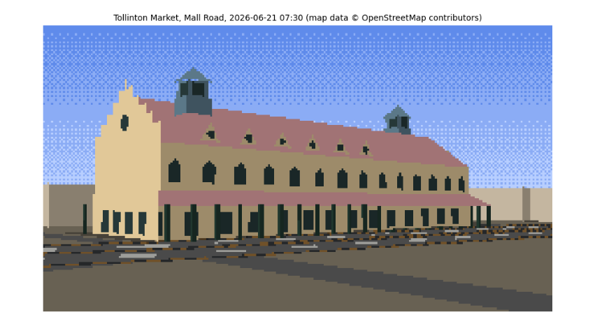
pixels per material (all three tones): {'wall': 5707, 'roof': 3323, 'cupola': 384, 'road': 2802, 'window': 1359, 'other': 1113}
This is the still. Read it against the evidence. The long yellow façade faces us across Mall Road with its two rows of windows, the red roof with its dormers rising behind, the two green cupolas near the ends and the stepped gable at the east end, all at the proportions measured from the photo and placed where the map puts them. The light is the 07:30 June sun from the east-north-east: the east gable, facing it more squarely, takes the brightest tone, the long front a half tone, and the walls facing away are in shade. Shadows fall away from us to the west-south-west, behind the building, as they must with the sun in front and to the right; that is why the street in front is sunlit. The kerb stones flicker yellow and black along Mall Road, and the plainer blocks around are the neighbours from OSM. The grey bands across the foreground are not shadows (no shadow polygon reaches them; you can test this) but smaller OSM roads between us and Mall Road, drawn in the road's colour.
8.13 Traffic on Mall Road¶
A street needs traffic, and traffic has physics of its own. The Intelligent Driver Model (Treiber, Hennecke and Helbing, 2000) is a standard model in transport research. Each driver accelerates towards a desired speed v₀ but keeps a safe gap to the vehicle in front:
a = aₘₐₓ [ 1 − (v/v₀)⁴ − (*s**/s)² ], with *s** = s₀ + vT + vΔv / (2√(aₘₐₓ b)),
where s is the actual gap, Δv how much faster we are than the leader, T the time headway a driver keeps (about 1.5 s), s₀ the gap kept when stopped (2 m) and b a comfortable braking rate. The first term is the open road, the second the vehicle ahead. Different vehicles get different values: a motorbike is nimble, a rickshaw slow. We place them on the lanes of the Mall Road carriageway in front of the camera, move them along the road's own OSM line, and integrate with the same semi-implicit Euler steps as the kite in the earlier chapter.
road_line = max((xy_of(r) for r in mall), key=lambda g: -min(np.linalg.norm(g - EYE[:2], axis=1)))
seg = np.linalg.norm(np.diff(road_line, axis=0), axis=1); cum = np.r_[0, np.cumsum(seg)]
ROAD_LEN = cum[-1]
def along(s):
s = s % ROAD_LEN
i = min(np.searchsorted(cum, s) - 1, len(seg) - 1); i = max(i, 0)
d = (road_line[i + 1] - road_line[i]) / seg[i]
return road_line[i] + d * (s - cum[i]), d
KINDS = {"car": dict(v0=14.0, a=1.2, b=2.0, T=1.4, L=4.3, Wd=1.8, Ht=1.5, mat="car white"),
"car2": dict(v0=13.0, a=1.2, b=2.0, T=1.5, L=4.3, Wd=1.8, Ht=1.5, mat="car red"),
"rickshaw": dict(v0=9.0, a=0.8, b=1.5, T=1.6, L=2.8, Wd=1.4, Ht=1.8, mat="rickshaw"),
"bike": dict(v0=12.0, a=2.0, b=2.5, T=1.0, L=1.9, Wd=0.6, Ht=1.6, mat="rider")}
rng = np.random.default_rng(11)
vehicles = []
LANE_MIX = {0: [0.0, 0.0, 0.6, 0.4], 1: [0.4, 0.3, 0.0, 0.3], 2: [0.5, 0.4, 0.0, 0.1]} # rickshaws keep to the left lane
for lane in range(3):
s = rng.uniform(0, 15)
while s < ROAD_LEN - 10:
kind = rng.choice(list(KINDS), p=LANE_MIX[lane])
vehicles.append(dict(kind=kind, lane=lane, s=s, v=rng.uniform(5, 9), **KINDS[kind]))
s += rng.uniform(14, 30)
def idm_step(vehicles, dt):
for lane in range(3):
vs = sorted([v for v in vehicles if v["lane"] == lane], key=lambda v: v["s"])
for i, v in enumerate(vs):
lead = vs[(i + 1) % len(vs)] # the road is treated as a loop
gap = (lead["s"] - v["s"]) % ROAD_LEN - lead["L"]
s_star = 2.0 + v["v"] * v["T"] + v["v"] * (v["v"] - lead["v"]) / (2 * math.sqrt(v["a"] * v["b"]))
v["acc"] = v["a"] * (1 - (v["v"] / v["v0"]) ** 4 - (max(s_star, 0) / max(gap, 0.1)) ** 2)
for v in vs:
v["v"] = max(0.0, v["v"] + v["acc"] * dt) # semi-implicit Euler, no reversing
v["s"] += v["v"] * dt
def vehicle_faces(v, road_half=5.25):
pos, d = along(v["s"]); n = np.array([-d[1], d[0]])
centre = pos + n * (-road_half + 1.75 + 3.5 * v["lane"])
inside = np.r_[centre, v["Ht"] / 2]
c = [centre + d * a * v["L"] / 2 + n * b * v["Wd"] / 2 for a, b in ((-1, -1), (1, -1), (1, 1), (-1, 1))]
for i in range(4):
face([np.r_[c[i], 0.3], np.r_[c[(i + 1) % 4], 0.3], np.r_[c[(i + 1) % 4], v["Ht"]], np.r_[c[i], v["Ht"]]], v["mat"], inside, group="vehicle")
face([np.r_[p, v["Ht"]] for p in c], v["mat"], inside, group="vehicle")
for _ in range(300): # 30 s of warm-up so the traffic settles
idm_step(vehicles, 0.1)
speeds = np.array([v["v"] for v in vehicles])
print(f"{len(vehicles)} vehicles on {ROAD_LEN:.0f} m of road in 3 lanes; after warm-up speeds {speeds.min():.1f}-{speeds.max():.1f} m/s, "
f"mean {speeds.mean() * 3.6:.0f} km/h")
by_kind = {k: np.mean([v['v'] for v in vehicles if v['kind'] == k]) * 3.6 for k in KINDS if any(v['kind'] == k for v in vehicles)}
print("mean speed by kind (km/h):", {k: round(s) for k, s in by_kind.items()})
print("mean speed by lane (km/h):", {lane: round(np.mean([v["v"] for v in vehicles if v["lane"] == lane]) * 3.6) for lane in range(3)})
frames = []
static = len(FACES)
for fno in range(30):
for _ in range(2):
idm_step(vehicles, 0.05)
del FACES[static:]
for v in vehicles:
vehicle_faces(v)
frames.append(render(cam, FACES, GROUND))
del FACES[static:]
big = [f.convert("RGB").resize((WP * 3, HP * 3), Image.NEAREST) for f in frames]
big[0].save(DATA / "tollinton_traffic.gif", save_all=True, append_images=big[1:], duration=100, loop=0)
fig, axes = plt.subplots(1, 3, figsize=(12, 2.6))
for ax, i in zip(axes, (0, 15, 29)):
ax.imshow(frames[i].convert("RGB")); ax.set_axis_off(); ax.set_title(f"frame {i} (t = {i * 0.1:.1f} s)", fontsize=8)
plt.tight_layout(); plt.show()
print("saved", DATA / "tollinton_traffic.gif", f"({(DATA / 'tollinton_traffic.gif').stat().st_size / 1e3:.0f} kB)")
106 vehicles on 770 m of road in 3 lanes; after warm-up speeds 7.5-10.7 m/s, mean 33 km/h
mean speed by kind (km/h): {'car': 35, 'car2': 35, 'rickshaw': 28, 'bike': 32}
mean speed by lane (km/h): {0: 28, 1: 35, 2: 35}
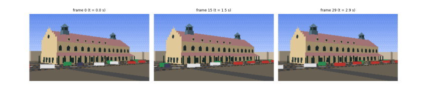
saved data\tollinton_traffic.gif (61 kB)
After half a minute of warm-up the traffic has settled into the pattern the model predicts: each lane moves at the pace of its slowest vehicles. The left lane, where the rickshaws keep, flows at about 28 km/h, and the bikes sharing it are held to that pace although they would go faster alone; the two right lanes flow at about 35 km/h. No vehicle reaches its own desired speed, because the road is busy and every driver keeps a 1 to 1.6 s gap. That is real traffic behaviour, produced by one equation. The three frames, a second and a half apart, show the vehicles moving along Mall Road in front of the market, drawn as small shaded boxes by the same renderer, lit by the same sun, and the 3-second loop is saved as a GIF.
8.14 What you have learned¶
-
Real places start from open data: OpenStreetMap gives outlines and streets, with tags that say what is known and what is not; cite it and its licence.
-
Degrees become metres with a local tangent plane, accurate to under a centimetre over a few hundred metres.
-
Missing heights can be measured from a photograph with a known length as ruler, minding perspective; record the uncertainty.
-
A palette can be measured with k-means clustering, and shaded with Lambert's cosine law.
-
The sun's position follows from the date, time and place; it decides which walls are lit and where shadows fall.
-
A building is a list of faces with normals; a pinhole camera, clipping, back-face culling and the painter's algorithm turn them into a picture.
-
The sky's colour follows from Planck's law and Rayleigh scattering.
-
Traffic is a car-following model; the same integrator that flew the kite drives the rickshaws.
9. Towards a game¶
An animation plays by itself; a game listens. The step from one to the other is small, and the next parts of this project take it one piece at a time, each from first principles.
9.1 The game loop¶
The film loop of Chapter 5 becomes a game loop with three steps repeated for ever: read the player’s input, update the world, draw. Physics must not depend on how fast the computer draws, so games use a fixed time step: they add the real time that has passed to an accumulator, run as many physics steps of, say, \(1/120\) s as fit, then draw once.
acc, dt = 0.0, 1 / 120
while running:
acc += time_since_last_frame()
handle_input()
while acc >= dt:
world.step(dt)
acc -= dt
draw(world)
9.2 Plan for the next parts¶
-
Input: steer the kite from the keyboard by letting out or pulling in string (changing \(L_0\)), with
pygamefor the window and keys. -
State and rules: a pech, the Basant kite fight: a second kite flown by the computer, and a rule for when one string cuts the other (the intersection of two line segments).
-
Collision: pigeons that avoid the kite (a fourth flocking rule) and kites that cannot pass through minarets (the inside tests you already have).
-
Sprites and tiles: small images reused many times, and a scrolling view of the Walled City: the Shahi Qila opposite the mosque and the Hazuri Bagh between them.
-
More landmarks as data: Government College’s tower, the National College of Arts and the Lahore Museum as new rows in the tables of Figure 6.3.
-
Sound: tones generated as waveforms, for the cry of bo kata! when a kite is cut.
Each part follows the pattern of this guide: the idea in words, the smallest code that shows it, a check that the result is what the physics or geometry says it should be, and then its place in the growing program.